Academia de Studii Economice din București IDA Institute Digital Assets Blockchain Research Center AI4EFin Artificial Intelligence for Energy Finance Academia Română, Institutul de Prognoză Economică MSCA Digital Finance
RW1: Random Walk 1 (i.i.d. increments) — mersul aleator 1 (creșteri i.i.d.)
RW3: Random Walk 3 (uncorrelated increments) — mersul aleator 3 (creșteri necorelate)
SE: Standard Error (eroare standard)
SFE: Statistics of Financial Markets, Exercises (Quantlet collection of the textbook) — colecția de Quantlet-uri a manualului Statistics of Financial Markets
Capitolele anterioare au arătat două fapte care par să se contrazică. Randamentele zilnice ale S&P 500 sînt aproape necorelate, deci randamentul de mîine nu poate fi anticipat din cel de azi (Capitolul 7). Pătratele lor sînt însă puternic corelate: autocorelația lui \(r_t^2\) este 0,31 la lagul 1 și încă 0,053 la lagul 50 (Capitolul 8). Variațiile mari vin după variații mari, de orice semn. Abaterea standard zilnică a indicelui a fost 0,42% în 2017, dar 3,52% între septembrie 2008 și martie 2009 și 3,70% între februarie și mai 2020.
Acest capitol transformă observația într-un model. Randamentul se scrie ca o medie aproape constantă plus un șoc al cărui ordin de mărime, volatilitatea condiționată, depinde de trecut. Modelul ARCH al lui Engle (1982) face varianța de azi o funcție de pătratele șocurilor recente, iar modelul GARCH(1,1) al lui Bollerslev (1986) adaugă varianța de ieri și obține, cu trei parametri, o memorie de luni de zile. Modelele se estimează prin verosimilitate maximă, cu inovații Normale, Student-t sau t asimetrice, și se extind cu efectul de levier (GJR-GARCH, EGARCH).
Aplicat pe șase piețe, de la S&P 500 la Bitcoin și la două acțiuni de la Bursa de Valori București, modelul arată diferențe clare: indicii de acțiuni au o volatilitate foarte persistentă și puternic asimetrică, Bitcoin are o volatilitate fără revenire la medie și fără efect de levier. Capitolul se încheie cu ceea ce face modelul util în practică: prognoze ale volatilității pe mai multe orizonturi, comparate în afara eșantionului cu EWMA, și un VaR 1% care se schimbă de la o zi la alta.
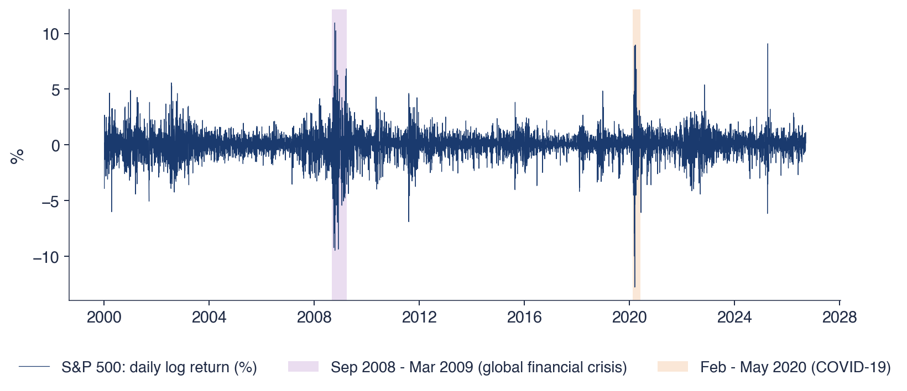
Randamentele logaritmice zilnice ale S&P 500 (%), din ianuarie 2000 pînă la 18 septembrie 2026; benzile colorate marchează criza financiară globală (septembrie 2008 – martie 2009) și criza COVID-19 (februarie – mai 2020).
Ce veți putea face
Deosebiți varianța condiționată de varianța necondiționată și explicați de ce randamentele pot fi necorelate, dar dependente.
Scrieți modelele ARCH(\(q\)) și GARCH(1,1) și calculați persistența, varianța necondiționată și timpul de înjumătățire.
Estimați modele GARCH prin verosimilitate maximă, interpretați erorile standard și alegeți distribuția inovațiilor.
Măsurați efectul de levier cu GJR-GARCH, EGARCH și curba de impact a știrilor.
Verificați un model estimat cu reziduurile standardizate și alegeți între modele cu AIC și BIC.
Prognozați volatilitatea pe mai multe orizonturi, comparați prognozele cu QLIKE și calculați un VaR 1% pe o zi.
Planul capitolului
Volatilitatea apare în episoadeRandamentele S&P 500 din 2000, două crize și faptele stilizate pe care un model trebuie să le reproducă.
AI pentru descoperire științificăO întrebare deschisă despre volatilitatea Bitcoin, ajutorul pe care îl poate da AI și verificările necesare.
RezumatIdeile principale, formulele și întrebări de autoevaluare.
Volatilitatea apare în episoade
Secțiunea pornește de la date. Randamentele zilnice ale S&P 500 din 2000 alternează ani liniștiți și perioade turbulente, iar două crize, din 2008 și din 2020, arată cît de mult și cît de mult timp poate crește volatilitatea. Secțiunea explică apoi de ce varianța condiționată este o mărime de care au nevoie managementul riscului, alegerea portofoliilor, evaluarea derivatelor și inferența statistică, și enumeră faptele stilizate pe care un model de volatilitate trebuie să le reproducă.
Graficul arată randamentele logaritmice zilnice ale S&P 500, \(r_t = 100(\ln P_t - \ln P_{t-1})\), în procente, pentru 6 714 zile de tranzacționare, din ianuarie 2000 pînă la 18 septembrie 2026. Cea mai mare scădere a eșantionului este −12,8%, pe 16 martie 2020, iar cea mai mare creștere este 11,0%, pe 13 octombrie 2008. Ambele extreme cad în interiorul unei crize: zilele cu cele mai mari cîștiguri nu apar în perioadele bune, ci în aceleași luni agitate ca zilele cu cele mai mari pierderi.
Dispersia randamentelor nu este constantă. Abaterea standard zilnică a fost 0,42% în 2017, 3,52% între septembrie 2008 și martie 2009 și 3,70% între februarie și mai 2020, adică de aproximativ opt-nouă ori mai mare în crize decît într-un an liniștit. Pe grafic, cele două crize, marcate cu benzi colorate, apar ca blocuri compacte de randamente mari, separate de ani lungi în care randamentele rămîn în cîteva zecimi de procent în jurul lui zero. O singură cifră pentru „volatilitatea S&P 500” face media între regimuri atît de diferite.
Regularitatea vizibilă pe grafic se numește grupare a volatilității (volatility clustering): variațiile mari sînt urmate de variații mari, de orice semn, iar cele mici de variații mici. Semnul randamentului de mîine rămîne imprevizibil, dar mărimea lui nu. Engle (1982) a dat primul model statistic pentru această regularitate, iar acest capitol pornește de la el.
Pe scurt
Randamente logaritmice zilnice \(r_t = 100(\ln P_t - \ln P_{t-1})\), în %, 6 714 zile pînă la 18 septembrie 2026; cea mai mare scădere: \(-12{,}8\%\) pe 16 martie 2020; cea mai mare creștere: \(11{,}0\%\) pe 13 octombrie 2008
Abaterea standard: \(0{,}42\%\) în 2017, \(3{,}52\%\) din septembrie 2008 pînă în martie 2009, \(3{,}70\%\) din februarie pînă în mai 2020
Variațiile mari urmează după variații mari, de orice semn: volatility clustering Engle (1982)
Fotografiile arată cele două episoade: sediul Lehman Brothers din New York pe 15 septembrie 2008, ziua în care banca a intrat în faliment, și districtul financiar din New York pe 25 martie 2020, cînd pandemia COVID-19 închisese economiile. Cauzele sînt foarte diferite: o criză din interiorul sistemului financiar și un șoc venit din afara lui.
Efectul asupra volatilității a fost totuși asemănător. Abaterea standard zilnică a S&P 500 a fost de 8,3 ori mai mare în criza financiară și de 8,8 ori mai mare în criza COVID-19 decît în 2017. În ambele cazuri calmul nu a revenit a doua zi, ci abia după cîteva luni.
Episoadele arată astfel două proprietăți pe care un model trebuie să le aibă. Varianța de azi trebuie să depindă de șocurile recente, astfel încît o zi agitată să facă probabilă încă o zi agitată. Iar efectul unui șoc trebuie să se stingă încet, în săptămîni și luni, nu într-o singură zi.
15 septembrie 2008: Lehman Brothers intră în faliment; martie 2020: pandemia COVID-19 duce la închiderea economiilor
În ambele episoade abaterea standard zilnică a S&P 500 a fost de 8,3 și, respectiv, de 8,8 ori mai mare decît în 2017; calmul a revenit abia după cîteva luni
În managementul riscului, valoarea expusă la risc (VaR, value at risk), pierderea depășită cu o probabilitate dată, și pierderea așteptată în coadă (ES, expected shortfall), pierderea medie dincolo de VaR, au nevoie de volatilitatea de mîine, nu de volatilitatea medie din ultimii 20 de ani. Un VaR calculat cu o varianță constantă este prea mare în anii liniștiți și prea mic în crize, exact cînd contează; Capitolul 10 măsoară acest eșec cu teste de backtesting.
Aceeași nevoie apare în alte domenii. Ponderile unui portofoliu cu varianță minimă depind de varianțe și covarianțe care se schimbă în timp. Prețul unei opțiuni depinde de volatilitatea așteptată pînă la scadență, deci de o prognoză a volatilității pe un orizont dat.
În inferența statistică, testele și intervalele de încredere care presupun o varianță constantă pot fi greșite cînd varianța variază: erorile standard obișnuite subestimează incertitudinea în perioadele agitate. De aceea Capitolul 7 a avut nevoie de teste ale ipotezei de mers aleator care rămîn valide în prezența heteroscedasticității.
Pe scurt
Managementul riscului: VaR (value at risk, valoarea expusă la risc) și ES (expected shortfall) au nevoie de volatilitatea de mîine, nu de volatilitatea medie din ultimii 20 de ani
un VaR cu varianță constantă este prea mare în anii liniștiți și prea mic în crize (Capitolul 10)
Portofolii: ponderile depind de varianțe și covarianțe, care se schimbă în timp
Derivate: prețurile opțiunilor depind de volatilitatea așteptată pînă la scadență
Inferență: testele și intervalele de încredere care presupun varianță constantă pot fi greșite
de aceea Capitolul 7 a avut nevoie de teste valide și în prezența heteroscedasticității
Faptele stilizate pe care un model de volatilitate trebuie să le reproducă
Primul fapt este volatility clustering, măsurat cu funcția de autocorelație (ACF, autocorrelation function) a pătratelor randamentelor (Capitolul 8). Pentru S&P 500, autocorelația lui \(r_t^2\) este 0,31 la lagul 1 și încă 0,053 la lagul 50: pozitivă și cu o scădere lentă, semnul unei memorii lungi a mărimii randamentelor. Al doilea fapt sînt cozile groase (heavy tails): coeficientul de boltire (kurtosis) al randamentelor zilnice S&P 500 este 13,7, față de 3 pentru distribuția Normală (Capitolul 2).
Al treilea fapt este efectul de levier (leverage effect): scăderile de preț cresc volatilitatea mai mult decît creșterile de aceeași mărime (Christie, 1982). Al patrulea este revenirea volatilității la medie (mean reversion): după o perioadă turbulentă volatilitatea nu rămîne ridicată la nesfîrșit, ci revine spre un nivel pe termen lung. Al cincilea este absența aproape completă a autocorelației în randamentele însele (Capitolul 7).
Un model de volatilitate trebuie să reproducă simultan toate cele cinci fapte: randamente necorelate, dar cu pătrate corelate, cozi groase, asimetrie și revenire la medie. Lista servește drept criteriu pentru restul capitolului. GARCH(1,1) explică gruparea, revenirea la medie și o parte din cozi; inovațiile Student-t explică restul cozilor; modelele GJR-GARCH și EGARCH explică asimetria.
Pe scurt
Volatility clustering: ACF (autocorrelation function, funcția de autocorelație) a lui \(r_t^2\) este pozitivă și scade lent (Capitolul 8)
S&P 500: autocorelația lui \(r_t^2\) la lagul 1: \(0{,}31\); la lagul 50: încă \(0{,}053\)
Cozi groase: coeficient de boltire peste 3, valoarea distribuției Normale (Capitolul 2)
randamentele zilnice S&P 500: coeficientul de boltire \(13{,}7\)
Efectul de levier: scăderile cresc volatilitatea mai mult decît creșterile de aceeași mărime Christie (1982)
Revenirea volatilității la medie: după o perioadă turbulentă, volatilitatea revine la un nivel pe termen lung
Aproape nicio autocorelație în \(r_t\) însuși (Capitolul 7)
Sinteza secțiunii
Randamentele zilnice ale S&P 500 trec de la o abatere standard de 0,42% într-un an liniștit la peste 3,5% în crize, iar perioadele agitate durează luni. Pătratele randamentelor sînt autocorelate pe zeci de laguri, randamentele au o boltire de 13,7, iar scăderile cresc volatilitatea mai mult decît creșterile. Secțiunea următoare dă un sens precis noțiunii de volatilitate „de azi”: varianța condiționată de trecut.
Media condiționată și varianța condiționată
Secțiunea definește cele două mărimi condiționate cu care lucrează capitolul, media și varianța randamentului dată fiind informația trecută, și scrie descompunerea comună tuturor modelelor din capitol. Un exemplu numeric arată de ce varianța necondiționată nu descrie nicio zi anume și de ce o varianță care variază produce cozi groase.
Fie \(\mathcal{F}_{t-1}\) informația disponibilă la sfîrșitul zilei \(t-1\), aici randamentele trecute. Media condiționată \(E[X \mid \mathcal{F}_{t-1}]\) este cea mai bună prognoză a lui \(X\) dată fiind această informație, în sensul erorii pătratice medii (Capitolul 4). Pentru randament, media condiționată este \(\mu_t = E[r_t \mid \mathcal{F}_{t-1}]\).Capitolul 7 a arătat că, pentru randamentele zilnice, trecutul aproape nu ajută la prognoza mediei, astfel încît \(\mu_t\) se poate lua constantă, \(\mu_t = \mu\).
iar rădăcina ei, \(\sigma_t\), este volatilitatea condiționată. Ea este cunoscută la sfîrșitul zilei \(t-1\), deoarece depinde numai de trecut, și se schimbă de la o zi la alta.
O varianță care nu este constantă se numește heteroscedasticitate (heteroskedasticity). Heteroscedasticitatea condiționată înseamnă ceva mai precis: varianța variază în funcție de informația trecută, deși varianța necondiționată, aceea a distribuției staționare a randamentelor, poate fi o constantă. Varianța necondiționată este un singur număr; varianța condiționată este un proces, care urmărește trecerea pieței de la perioade liniștite la perioade agitate.
Pe scurt
\(\mathcal{F}_{t-1}\): informația disponibilă la sfîrșitul zilei \(t-1\) (randamentele trecute)
media condiționată \(E[X \mid \mathcal{F}_{t-1}]\): cea mai bună prognoză a lui \(X\), dată fiind informația trecută (Capitolul 4)
Media condiționată: \(\mu_t = E[r_t \mid \mathcal{F}_{t-1}]\)
Capitolul 7: pentru randamentele zilnice, \(\mu_t\) este aproape constantă: \(\mu_t = \mu\)
Inovațiile (innovations) \(z_t\) sînt i.i.d., cu media 0 și varianța 1; distribuția lor poate fi Normală, Student-t sau alta. Șocul \(\varepsilon_t\) este randamentul minus media lui, iar volatilitatea \(\sigma_t\) depinde numai de trecut. Modelele diferă doar prin ecuația care leagă \(\sigma_t\) de trecut și prin distribuția lui \(z_t\).
Din această formă rezultă trei consecințe. Deoarece \(\sigma_t\) este cunoscută la \(t-1\) și \(z_t\) este independent de trecut, \(E[\varepsilon_t \mid \mathcal{F}_{t-1}] = \sigma_t E[z_t] = 0\): șocurile sînt o diferență de martingal (martingale difference). Prin legea mediilor iterate, \(\mathrm{Cov}(\varepsilon_t, \varepsilon_{t-k}) = E[\varepsilon_{t-k} E(\varepsilon_t \mid \mathcal{F}_{t-1})] = 0\), deci șocurile sînt necorelate. În schimb, \(\mathrm{Var}(\varepsilon_t \mid \mathcal{F}_{t-1}) = \sigma_t^2\) este previzibilă, iar \(\varepsilon_t^2\) este corelat cu \(\varepsilon_{t-1}^2\), deoarece \(\sigma_t\) depinde de șocurile trecute. Șocurile sînt necorelate, dar nu independente.
În termenii Capitolului 7, ipoteza RW1, cu creșteri i.i.d., este respinsă, iar ipoteza RW3, cu creșteri necorelate, rămîne valabilă. Descompunerea împacă cele două fapte de la începutul capitolului: o piață în care randamentul nu poate fi prevăzut poate avea un risc previzibil.
Pe scurt
Toate modelele din acest capitol au forma \(r_t = \mu + \varepsilon_t\), \(\varepsilon_t = \sigma_t z_t\)
\(z_t\): inovațiile, i.i.d. cu media 0 și varianța 1 (Normale, Student-t, …)
\(\varepsilon_t\): șocul (randamentul minus media lui); \(\sigma_t\) depinde doar de trecut
Consecințe
\(E[\varepsilon_t \mid \mathcal{F}_{t-1}] = \sigma_t E[z_t] = 0\): șocurile sînt o diferență de martingal, deci sînt necorelate
\(\mathrm{Var}(\varepsilon_t \mid \mathcal{F}_{t-1}) = \sigma_t^2\): varianța este previzibilă
\(\varepsilon_t\) sînt necorelate, dar nu independente: \(\varepsilon_t^2\) este corelat cu \(\varepsilon_{t-1}^2\)
În termenii Capitolului 7: RW1 (creșteri i.i.d.) este respinsă, RW3 (creșteri necorelate) rămîne valabilă
Exemplu rezolvat: varianța condiționată și varianța necondiționată
Să considerăm o piață cu două tipuri de zile: zile liniștite, cu varianța condiționată \(\sigma_t^2 = 0{,}5\), și zile agitate, cu \(\sigma_t^2 = 4{,}5\), fiecare cu probabilitatea \(1/2\), iar media condiționată este 0. Legea varianței totale descompune varianța necondiționată în media varianțelor condiționate plus varianța mediilor condiționate:
Pas cu pas, \(\mathrm{Var}(r_t) = 0{,}5 \times 0{,}5 + 0{,}5 \times 4{,}5 + 0 = 2{,}50\), deci abaterea standard necondiționată este \(\sqrt{2{,}50} = 1{,}58\%\). Într-o zi liniștită însă \(\sigma_t = 0{,}71\%\), iar într-o zi agitată \(\sigma_t = 2{,}12\%\). Media de 1,58% nu descrie niciuna dintre zile: varianța necondiționată este o medie, iar varianța condiționată spune în ce fel de zi ne aflăm.
Exemplul arată și de unde vin cozile groase. Dacă \(z_t\) este Normal, \(r_t\) este un amestec de distribuții Normale cu varianțe diferite, iar \(E[r_t^4] = 3E[\sigma_t^4]\). Coeficientul de boltire este atunci \(3E[\sigma_t^4]/(E[\sigma_t^2])^2\), care depășește 3 ori de cîte ori \(\sigma_t\) variază, prin inegalitatea lui Jensen. În exemplu, \(E[\sigma_t^4] = (0{,}25 + 20{,}25)/2 = 10{,}25\), iar boltirea este \(3 \times 10{,}25/6{,}25 = 4{,}92\). Heteroscedasticitatea condiționată creează boltire chiar cu inovații Normale.
Pe scurt
O piață are zile liniștite (\(\sigma_t^2 = 0{,}5\)) și zile agitate (\(\sigma_t^2 = 4{,}5\)), fiecare cu probabilitatea \(1/2\); media este 0
pas cu pas: \(0{,}5 \times 0{,}5 + 0{,}5 \times 4{,}5 + 0 = 2{,}50\), deci abaterea standard necondiționată este \(1{,}58\%\)
Varianța necondiționată este o medie; varianța condiționată ne spune în ce fel de zi ne aflăm
o zi liniștită: \(\sigma_t = 0{,}71\%\); o zi agitată: \(\sigma_t = 2{,}12\%\); media de \(1{,}58\%\) nu descrie niciuna dintre ele
Un amestec de distribuții Normale cu varianțe diferite are cozi groase: heteroscedasticitatea condiționată creează boltire
Sinteza secțiunii
Media condiționată a randamentelor zilnice este aproape constantă, iar varianța condiționată \(\sigma_t^2\) se schimbă de la o zi la alta. Descompunerea (9.1) produce șocuri necorelate, dar dependente, iar amestecul de zile liniștite și agitate produce cozi groase. Secțiunea următoare prezintă primul model pentru \(\sigma_t^2\), modelul ARCH.
Modelul ARCH
Modelul ARCH face varianța de azi o funcție liniară de pătratele șocurilor recente. Secțiunea prezintă originea lui, definiția și proprietățile modelului ARCH(1), o comparație între traiectorii simulate și extinderea ARCH(\(q\)), împreună cu limita ei principală: pentru a reproduce memoria lungă a volatilității, modelul are nevoie de multe laguri.
Engle (1982) a introdus modelul ARCH (autoregressive conditional heteroskedasticity, heteroscedasticitate condiționată autoregresivă), în care varianța de azi depinde de pătratele șocurilor de ieri. Prima aplicație nu a fost pe piețele financiare, ci pe varianța inflației din Regatul Unit; lucrarea a fost scrisă în timpul vizitei lui Engle la London School of Economics.
Contribuția a fost premiată cu Premiul Nobel pentru economie din 2003, „pentru metode de analiză a seriilor de timp economice cu volatilitate variabilă în timp (ARCH)”, împărțit cu Clive Granger, distins pentru cointegrare. Prelegerea Nobel a lui Engle (Engle, 2004) descrie drumul de la modelul inițial la folosirea lui în managementul riscului. Fotografiile îl arată pe Robert F. Engle în 2022 și Sala de concerte din Stockholm, unde se decernează Premiile Nobel.
Ideea a schimbat statutul varianței în econometrie. Înainte, varianța era tratată ca o constantă sau era estimată pe ferestre mobile, fără un model al dinamicii ei. ARCH a făcut din varianța condiționată un obiect parametric, care se estimează prin verosimilitate maximă, se testează și se prognozează.
Pe scurt
Engle (1982): ARCH (autoregressive conditional heteroskedasticity, heteroscedasticitate condiționată autoregresivă): varianța de azi depinde de pătratele șocurilor de ieri
prima aplicație: varianța inflației din Regatul Unit; scris în timpul vizitei lui Engle la London School of Economics
Premiul Nobel 2003: „pentru metode de analiză a seriilor de timp economice cu volatilitate variabilă în timp (ARCH)”
împărțit cu Clive Granger (cointegrare); prelegerea Nobel: Engle (2004)
cu \(\omega > 0\) și \(\alpha \ge 0\). În cuvinte, varianța de azi este o constantă plus o fracțiune \(\alpha\) din pătratul șocului de ieri. Parametrul \(\omega\) este varianța după un șoc nul, iar \(\alpha\) măsoară reacția la șocul de ieri; restricțiile asigură o varianță pozitivă. Deoarece șocul intră la pătrat, un șoc mare ieri, pozitiv sau negativ, crește varianța de azi.
Numele de „autoregresiv” vine dintr-o rescriere. Fie \(v_t = \varepsilon_t^2 - \sigma_t^2 = \sigma_t^2(z_t^2 - 1)\), surpriza din pătratul șocului; \(E[v_t \mid \mathcal{F}_{t-1}] = 0\), deoarece \(E[z_t^2] = 1\). Înlocuind \(\sigma_t^2 = \varepsilon_t^2 - v_t\) în ecuația varianței, obținem \(\varepsilon_t^2 = \omega + \alpha\,\varepsilon_{t-1}^2 + v_t\): pătratele șocurilor urmează un model AR(1), cu o eroare \(v_t\) care este o diferență de martingal, dar heteroscedastică.
De aici rezultă dinamica pătratelor. Cînd momentul de ordinul patru există, ACF a lui \(\varepsilon_t^2\) este \(\rho(k) = \alpha^k\), ca la orice AR(1). Modelul produce așadar volatility clustering, dar autocorelația scade geometric cu rata \(\alpha\): pentru \(\alpha = 0{,}5\) ea este deja \(0{,}5^5 \approx 0{,}03\) la lagul 5, în timp ce pentru S&P 500 autocorelația lui \(r_t^2\) este încă 0,053 la lagul 50.
Șocurile ARCH(1) au media zero și sînt necorelate, \(\mathrm{Cov}(\varepsilon_t, \varepsilon_{t-k}) = 0\) pentru \(k \ne 0\), ca orice diferență de martingal. Varianța necondiționată se obține aplicînd media în ecuația varianței. Dacă procesul este staționar, \(\bar\sigma^2 = E[\varepsilon_t^2] = E[\sigma_t^2] = \omega + \alpha\bar\sigma^2\), deci \(\bar\sigma^2 = \omega/(1 - \alpha)\), o mărime finită și pozitivă numai pentru \(\alpha < 1\).
Cu inovații Normale și \(3\alpha^2 < 1\), coeficientul de boltire al șocurilor este
Inovațiile sînt Normale, dar randamentele au cozi groase (Franke, Härdle & Hafner, 2019), din motivul din exemplul secțiunii anterioare: \(\varepsilon_t\) este un amestec de distribuții Normale cu varianțe aleatoare. Dacă \(\alpha \ge 1/\sqrt{3} = 0{,}577\), momentul de ordinul patru este infinit, deși varianța rămîne finită pentru \(\alpha < 1\).
Exemplul rezolvat folosește \(\omega = 0{,}5\) și \(\alpha = 0{,}5\). Varianța necondiționată este \(\bar\sigma^2 = 0{,}5/0{,}5 = 1{,}00\), iar boltirea este \(K = 3 \times 0{,}75/0{,}25 = 9{,}0\). După un șoc \(\varepsilon_{t-1} = 2\), de două abateri standard necondiționate, varianța de azi este \(\sigma_t^2 = 0{,}5 + 0{,}5 \times 4 = 2{,}50\), iar \(\sigma_t = 1{,}58\): un singur șoc de două abateri standard ridică varianța de azi la de 2,5 ori nivelul ei necondiționat.
Pe scurt
Media și autocorelația: \(E[\varepsilon_t] = 0\), \(\mathrm{Cov}(\varepsilon_t, \varepsilon_{t-k}) = 0\) pentru \(k \ne 0\)
Varianța necondiționată (dacă \(\alpha < 1\)): aplicăm media în \(\sigma_t^2 = \omega + \alpha\varepsilon_{t-1}^2\)
Graficul compară trei serii simulate de cîte 1000 de valori, toate cu varianța necondiționată 1: o serie i.i.d. Normală, un ARCH(1) cu \(\omega = \alpha = 0{,}5\) și un GARCH(1,1) cu \(\omega = 0{,}02\),\(\alpha = 0{,}10\) și \(\beta = 0{,}88\), modelul secțiunii următoare. Deoarece varianța necondiționată este aceeași, diferențele dintre panouri vin numai din dinamica varianței.
Coeficienții de boltire de selecție sînt 3,12 pentru seria i.i.d., 4,91 pentru ARCH și 3,74 pentru GARCH, față de valorile teoretice 3, 9,0 și 6,06. Diferența dintre valorile de selecție și cele teoretice arată că momentul de ordinul patru converge lent: el depinde de cîteva valori foarte mari, iar 1000 de observații conțin puține astfel de valori. Același lucru face boltirea de selecție a randamentelor reale o mărime instabilă.
Panourile arată diferența de dinamică. ARCH(1) produce vîrfuri izolate: memoria lui este de o singură zi, deci un șoc mare ridică varianța de a doua zi, iar efectul dispare repede. GARCH(1,1) produce perioade lungi liniștite și perioade lungi agitate, cum se văd în jurul valorilor 250 și 850, ca în randamentele reale ale S&P 500 din primul grafic al capitolului.
Pe scurt
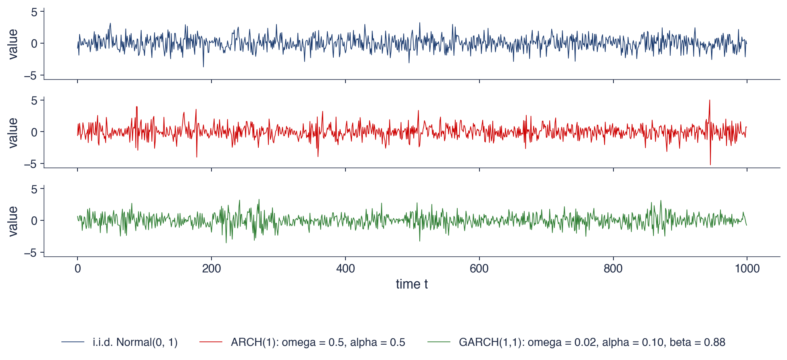
Trei serii de 1000 de valori cu varianța necondiționată 1; ARCH(1) cu \(\omega = \alpha = 0{,}5\), GARCH(1,1) cu \(\omega = 0{,}02\), \(\alpha = 0{,}10\), \(\beta = 0{,}88\) (secțiunea următoare)
Coeficientul de boltire de selecție: i.i.d. \(3{,}12\), ARCH \(4{,}91\), GARCH \(3{,}74\); teoretic: 3, \(9{,}0\), \(6{,}06\); momentul de ordinul patru converge lent
ARCH(1) produce vîrfuri izolate; GARCH(1,1) produce perioade lungi liniștite și perioade lungi agitate, ca în randamentele reale
Modelul ARCH(\(q\)) include \(q\) laguri: \(\sigma_t^2 = \omega + \alpha_1\varepsilon_{t-1}^2 + \dots + \alpha_q\varepsilon_{t-q}^2\), cu \(\alpha_i \ge 0\), staționar dacă \(\sum_i \alpha_i < 1\). Coeficientul \(\alpha_i\) măsoară reacția la șocul de acum \(i\) zile. Efectul unui șoc durează exact \(q\) zile, în timp ce gruparea volatilității în datele reale durează luni; pentru a o reproduce, \(q\) trebuie să fie mare, cu mulți parametri constrînși să fie nenegativi.
Existența efectelor ARCH se testează cu testul multiplicatorului Lagrange al lui Engle (ARCH-LM, Lagrange multiplier): regresia lui \(\hat\varepsilon_t^2\) pe propriile \(q\) laguri, cu statistica \(TR^2\), care are distribuția \(\chi^2(q)\) dacă nu există efecte ARCH (Capitolul 8). O respingere arată că pătratele reziduurilor sînt previzibile din trecutul lor.
Tabelul estimează pe S&P 500, cu inovații Normale, modelele ARCH(1), ARCH(5), ARCH(10) și GARCH(1,1). Log-verosimilitatea crește de la −10 305,5 pentru ARCH(1), cu 3 parametri, la −9 340,5 pentru ARCH(5), cu 7 parametri, și la −9 227,6 pentru ARCH(10), cu 12 parametri, iar suma coeficienților \(\alpha_i\) crește de la 0,394 la 0,816 și la 0,849. GARCH(1,1), cu numai 4 parametri, are o log-verosimilitate mai mare (−9 218,0), persistența \(\alpha + \beta = 0{,}980\) și cele mai mici criterii informaționale: AIC 18 444,0 și BIC 18 471,2, față de 18 479,3 și 18 561,0 pentru ARCH(10). Criteriile AIC și BIC, pentru care o valoare mai mică este mai bună, sînt definite în Secțiunea 10. ARCH are nevoie de zece laguri și rămîne inferior unui model cu patru parametri; ingredientul care lipsește este memoria lungă.
\(q\): numărul de laguri; \(\alpha_i\): reacția la șocul de acum \(i\) zile
efectul unui șoc durează exact \(q\) zile; clustering-ul real durează luni
Testarea efectelor ARCH: testul ARCH-LM al lui Engle (regresia lui \(\hat\varepsilon_t^2\) pe propriile laguri), Capitolul 8
S&P 500, \(z_t\) Normale
parametri
log-verosimilitate
AIC
BIC
\(\sum\alpha_i\) (+\(\beta\))
ARCH(1)
3
\(-10305{,}5\)
20617,0
20637,5
\(0{,}394\)
ARCH(5)
7
\(-9340{,}5\)
18695,1
18742,7
\(0{,}816\)
ARCH(10)
12
\(-9227{,}6\)
18479,3
18561,0
\(0{,}849\)
GARCH(1,1)
4
\(-9218{,}0\)
18444,0
18471,2
\(0{,}980\)
Interpretare: ARCH are nevoie de zece laguri și rămîne totuși inferior modelului GARCH(1,1), care are patru parametri (AIC și BIC: valoarea mai mică este mai bună, secțiunea 10)
ARCH(1) face varianța de azi o funcție de pătratul șocului de ieri, (9.2). Modelul produce șocuri necorelate, varianța necondiționată \(\omega/(1 - \alpha)\) și cozi groase chiar cu inovații Normale, dar memoria lui este scurtă. ARCH(\(q\)) lungește memoria cu prețul multor parametri, iar pe S&P 500 nici ARCH(10) nu ajunge la verosimilitatea unui GARCH(1,1) cu patru parametri. Secțiunea următoare prezintă acest model.
Modelul GARCH(1,1)
GARCH(1,1) adaugă în ecuația varianței varianța de ieri și obține astfel, cu trei parametri, un ARCH cu un număr infinit de laguri și ponderi geometrice. Secțiunea definește modelul, stabilește condiția de staționaritate, varianța pe termen lung și boltirea, introduce persistența și timpul de înjumătățire, le aplică într-un exemplu și arată legătura cu IGARCH și cu EWMA.
Bollerslev (1986), pe atunci doctorand al lui Engle la University of California, San Diego, a adăugat în ecuația varianței varianța de ieri. Modelul GARCH (generalised ARCH, ARCH generalizat) înlocuiește un ARCH(\(q\)) lung cu cîțiva parametri. Fotografia arată Biblioteca Geisel a universității.
Un an mai tîrziu, Bollerslev (1987) a combinat modelul cu inovații Student-t, pentru a descrie cozile groase ale randamentelor, combinație folosită în Secțiunea 6 a acestui capitol.
GARCH(1,1) a rămas modelul de referință. Hansen & Lunde (2005) au comparat 330 de modele de volatilitate și nu au găsit niciunul care să-l întreacă la cursurile de schimb; pentru randamentele unei acțiuni, modelele care includ efectul de levier s-au descurcat mai bine. Ambele rezultate se regăsesc pe datele acestui capitol, în secțiunile despre asimetrie și despre prognoză.
Pe scurt
Bollerslev (1986), doctorand al lui Engle la University of California, San Diego: adaugă în ecuație varianța de ieri
cu \(\omega > 0\),\(\alpha \ge 0\) și \(\beta \ge 0\), restricții care păstrează varianța pozitivă. Fiecare parametru are un rol. \(\alpha\) este reacția la știrile de ieri, adică mărimea saltului varianței după un șoc. \(\beta\) este memoria varianței, partea din nivelul de ieri care se păstrează azi. Suma \(\alpha + \beta\) este persistența (persistence), iar \(\omega\) fixează, împreună cu ea, nivelul pe termen lung.
Înlocuind repetat \(\sigma_{t-1}^2\),\(\sigma_{t-2}^2\), … în ecuație, obținem
GARCH(1,1) este așadar un ARCH(\(\infty\)) cu ponderi geometrice: toate șocurile trecute contează, iar șocul de acum \(j + 1\) zile primește ponderea \(\alpha\beta^j\). Cu \(\beta\) aproape de 1, ponderile scad încet, iar trei parametri produc memoria de luni pe care ARCH(\(q\)) o obținea doar cu zeci de laguri.
Forma ponderilor este aceeași cu a mediei mobile ponderate exponențial din Capitolul 8. Diferența este constanta \(\omega/(1 - \beta)\), care trage varianța spre un nivel pe termen lung; legătura exactă cu EWMA apare la sfîrșitul secțiunii.
Ca la ARCH, notăm \(v_t = \varepsilon_t^2 - \sigma_t^2\), surpriza din pătratul șocului. Înlocuind în (9.3), obținem \(\varepsilon_t^2 = \omega + (\alpha + \beta)\varepsilon_{t-1}^2 + v_t - \beta v_{t-1}\): pătratele șocurilor urmează un model ARMA(1,1), autoregresiv cu medie mobilă (autoregressive moving average). Partea autoregresivă are coeficientul \(\alpha + \beta\), astfel încît ACF a lui \(\varepsilon_t^2\) scade ca \((\alpha + \beta)^k\) la lagul \(k\). Cu \(\alpha\) mic și \(\alpha + \beta\) aproape de 1, autocorelațiile pătratelor sînt moderate, dar scad foarte încet, ca la S&P 500.
Procesul este staționar în covarianță dacă \(\alpha + \beta < 1\). Atunci varianța necondiționată, numită și varianța pe termen lung, este
iar volatilitatea anualizată corespunzătoare este \(\sqrt{252\,\bar\sigma^2}\), cu 252 de zile de tranzacționare pe an. Numitorul \(1 - \alpha - \beta\) este mic cînd persistența este aproape de 1, ceea ce face ca \(\bar\sigma^2\) să fie sensibil la erori mici în parametri.
Cu inovații Normale și \((\alpha + \beta)^2 + 2\alpha^2 < 1\), boltirea șocurilor este
Pentru \(\alpha = 0{,}10\) și \(\beta = 0{,}88\),\((\alpha + \beta)^2 + 2\alpha^2 = 0{,}9804\) și \(K = 6{,}06\). Condiția de existență a momentului de ordinul patru este aproape la limită: un \(\alpha\) puțin mai mare, la aceeași persistență, face boltirea infinită.
Pe scurt
Ca la ARCH: \(\varepsilon_t^2 = \omega + (\alpha + \beta)\varepsilon_{t-1}^2 + v_t - \beta v_{t-1}\), un ARMA(1,1) pentru pătratele șocurilor
\(v_t = \varepsilon_t^2 - \sigma_t^2\): surpriza din pătratul șocului, ca la ARCH(1)
ARMA: model autoregresiv cu medie mobilă; ACF a lui \(\varepsilon_t^2\) scade ca \((\alpha + \beta)^k\) la lagul \(k\)
Staționar în covarianță dacă \(\alpha + \beta < 1\); atunci varianța necondiționată (pe termen lung) este
\(\bar\sigma^2 = E[\sigma_t^2] = \dfrac{\omega}{1 - \alpha - \beta}\), volatilitatea anualizată \(\sqrt{252\,\bar\sigma^2}\) pentru 252 de zile de tranzacționare
Coeficientul de boltire cu \(z_t\) Normale, dacă \((\alpha + \beta)^2 + 2\alpha^2 < 1\): \(K = 3\,\dfrac{1 - (\alpha + \beta)^2}{1 - (\alpha + \beta)^2 - 2\alpha^2} > 3\)
unde \(E[\cdot \mid \mathcal{F}_t]\) este prognoza făcută la sfîrșitul zilei \(t\), iar \(\bar\sigma^2\) este varianța pe termen lung. Abaterea varianței de la nivelul pe termen lung se micșorează cu factorul \(\alpha + \beta\) în fiecare zi. Persistența spune deci cît de repede uită modelul un șoc.
Timpul de înjumătățire (half-life) este numărul de zile după care a dispărut jumătate dintr-un șoc de varianță. Din \((\alpha + \beta)^h = 1/2\),
Pentru \(\alpha + \beta = 0{,}90\), timpul de înjumătățire este 6,6 zile; pentru 0,98 este 34,3 zile; pentru 0,99 este 69,0 zile. Schimbările mici ale persistenței în apropiere de 1 contează mult: trecerea de la 0,98 la 0,99 dublează timpul de înjumătățire.
Pentru randamentele zilnice ale acțiunilor, estimările tipice sînt \(\alpha\) în jur de 0,05–0,15 și \(\beta\) în jur de 0,80–0,93, cu \(\alpha + \beta\) aproape de 1. Reacția la știrile unei zile este mică, iar memoria este lungă; Secțiunea 7 confirmă acest tipar pe șase piețe.
Pe scurt
Prognoza varianței peste \(h\) zile (derivată în secțiunea 11): \(E[\sigma_{t+h}^2 \mid \mathcal{F}_t] - \bar\sigma^2 = (\alpha + \beta)^{h-1}(\sigma_{t+1}^2 - \bar\sigma^2)\)
\(E[\cdot \mid \mathcal{F}_t]\): prognoza făcută la sfîrșitul zilei \(t\); \(\bar\sigma^2\): varianța pe termen lung
o abatere de la varianța pe termen lung se micșorează cu factorul \(\alpha + \beta\) în fiecare zi
Timpul de înjumătățire: numărul de zile după care a dispărut jumătate dintr-un șoc de varianță
Pentru randamente zilnice în procente, considerăm \(\omega = 0{,}02\),\(\alpha = 0{,}10\),\(\beta = 0{,}88\) și \(\mu = 0\). Persistența este \(\alpha + \beta = 0{,}98\), varianța pe termen lung este \(\bar\sigma^2 = 0{,}02/(1 - 0{,}98) = 1{,}00\), deci volatilitatea anualizată pe termen lung este \(\sqrt{252 \times 1{,}00} = 15{,}9\%\). Timpul de înjumătățire este \(\ln 0{,}5/\ln 0{,}98 = 34{,}3\) zile.
Azi varianța condiționată este \(\sigma_t^2 = 1{,}2\), iar randamentul este \(r_t = -3\%\), deci șocul este \(\varepsilon_t = -3\). Varianța de mîine este \(\sigma_{t+1}^2 = 0{,}02 + 0{,}10 \times 9 + 0{,}88 \times 1{,}2 = 1{,}976\), iar volatilitatea de mîine este \(\sigma_{t+1} = 1{,}41\%\). Cei trei termeni arată contribuțiile: 0,02 din constantă, 0,90 din șocul de azi și 1,056 din memoria varianței de azi.
Șocul a ridicat varianța de la 1,2 la aproape 2. Fără șocuri noi, ea scade apoi spre 1,00 cu factorul 0,98 pe zi, iar excesul de 0,976 peste nivelul pe termen lung se înjumătățește în aproximativ 34 de zile. Un randament de +3% ar fi produs exact aceeași varianță: GARCH(1,1) nu face diferența între semne.
Modelul IGARCH (integrated GARCH, GARCH integrat) (Engle & Bollerslev, 1986) este cazul-limită \(\alpha + \beta = 1\). Șocurile varianței nu se mai sting: factorul de micșorare din (9.5) este 1, deci nu există timp de înjumătățire și nici varianță necondiționată finită. Prognoza varianței nu mai revine spre un nivel pe termen lung: cu \(\omega = 0\) ea este aceeași pentru orice orizont, iar cu \(\omega > 0\) crește liniar cu orizontul, \(E_t[\sigma_{t+h}^2] = \sigma_{t+1}^2 + (h - 1)\omega\).
Media mobilă ponderată exponențial (EWMA, exponentially weighted moving average) din Capitolul 8, \(\sigma_t^2 = \lambda\sigma_{t-1}^2 + (1 - \lambda)r_{t-1}^2\), este un IGARCH cu \(\omega = 0\),\(\alpha = 1 - \lambda\) și \(\beta = \lambda\). Metodologia RiskMetrics folosește \(\lambda = 0{,}94\) pentru date zilnice. Cele două metode au avantaje opuse: EWMA nu are nimic de estimat, dar nu revine la medie; GARCH are trei parametri de estimat, iar volatilitatea lui revine la \(\bar\sigma\).
Întrebare pentru sală: un analist prognozează volatilitatea pentru anul următor cu EWMA, imediat după un crah. Unde greșește? Răspuns: EWMA păstrează nivelul de criză de azi pentru întregul an, în timp ce GARCH îl lasă să scadă spre nivelul pe termen lung, cu viteza dată de persistență. Pe un orizont lung, diferența dintre cele două prognoze este mare tocmai după un șoc mare.
este un IGARCH cu \(\omega = 0\), \(\alpha = 1 - \lambda\), \(\beta = \lambda\); RiskMetrics folosește \(\lambda = 0{,}94\) pentru date zilnice
EWMA: nimic de estimat, dar fără revenire la medie; GARCH: trei parametri, iar volatilitatea revine la \(\bar\sigma\)
Întrebare pentru sală: un analist prognozează volatilitatea peste un an cu EWMA imediat după un crah. Unde greșește?
Răspuns: EWMA păstrează nivelul de criză de azi pentru tot anul; GARCH îl lasă să scadă spre nivelul pe termen lung
Sinteza secțiunii
GARCH(1,1), (9.3), este un ARCH(\(\infty\)) cu ponderi geometrice. Pentru \(\alpha + \beta < 1\) procesul este staționar, cu varianța pe termen lung (9.4), iar prognozele revin spre ea cu factorul \(\alpha + \beta\) pe zi; timpul de înjumătățire (9.6) transformă persistența în zile. IGARCH și EWMA sînt cazul-limită fără revenire la medie. Secțiunea următoare arată cum se estimează parametrii.
Estimarea prin verosimilitate maximă
Parametrii unui model GARCH se estimează prin verosimilitate maximă. Secțiunea scrie log-verosimilitatea condiționată, arată pe date simulate cum se schimbă forma ei cu volumul eșantionului, estimează GARCH(1,1) pentru S&P 500 cu o implementare directă și cu un pachet specializat și explică de ce erorile standard trebuie calculate robust cînd inovațiile nu sînt Normale.
Randamentele unui model GARCH sînt dependente, deci densitatea lor comună nu este un produs de densități marginale. Ea se descompune însă în densități condiționate: cu \(f\) o densitate, \(T\) numărul de randamente și \(\theta\) vectorul parametrilor, \(f(r_1, \dots, r_T) = f(r_1)\prod_{t=2}^{T} f(r_t \mid \mathcal{F}_{t-1})\). Cu inovații Normale, fiecare factor este o densitate Normală, \(r_t \mid \mathcal{F}_{t-1} \sim N(\mu, \sigma_t^2)\).
Condiționînd pe prima observație și luînd logaritmul, log-verosimilitatea condiționată pentru \(\theta = (\mu, \omega, \alpha, \beta)\) este
Fiecare zi adaugă două penalizări: una pentru un \(\sigma_t^2\) mare și una pentru o eroare la pătrat mare în raport cu \(\sigma_t^2\). Prima împinge varianța în jos, a doua în sus, iar maximul echilibrează cele două. Varianțele \(\sigma_t^2(\theta)\) se calculează recursiv cu (9.3), pornind de la o valoare inițială \(\sigma_1^2\), de exemplu varianța de selecție.
Estimatorul de verosimilitate maximă (MLE, maximum likelihood estimation) este \(\hat\theta = \arg\max_\theta \ell(\theta)\), sub restricțiile \(\omega > 0\),\(\alpha, \beta \ge 0\) și \(\alpha + \beta < 1\). Deoarece \(\sigma_t^2(\theta)\) depinde de parametri prin recursie, nu există o formulă explicită pentru \(\hat\theta\); un algoritm numeric de optimizare caută maximul (Franke, Härdle & Hafner, 2019).
Pe scurt
Randamentele sînt dependente, deci descompunem densitatea comună în densități condiționate
\(f\): o densitate de probabilitate; \(T\): numărul de randamente; \(\theta\): vectorul parametrilor; \(\ell\): log-verosimilitatea
\(f(r_1, \dots, r_T) = f(r_1)\prod_{t=2}^{T} f(r_t \mid \mathcal{F}_{t-1})\), iar \(r_t \mid \mathcal{F}_{t-1} \sim N(\mu, \sigma_t^2)\) pentru inovații Normale
Log-verosimilitatea condiționată, cu \(\theta = (\mu, \omega, \alpha, \beta)\):
Graficul arată log-verosimilitatea unui ARCH(1) simulat cu \(\omega = \alpha = 0{,}5\), ca funcție de \(\alpha\), cu \(\omega = 1 - \alpha\), astfel încît varianța necondiționată să rămînă 1. Fiecare curbă este redată minus maximul ei, deci vîrful ei este la zero, iar axa verticală măsoară cît pierde verosimilitatea cînd \(\alpha\) se depărtează de estimare.
Cu \(n = 100\) de observații, maximul este la \(\hat\alpha = 0{,}432\), cu eroarea standard 0,127; cu \(n = 1000\), maximul este la \(\hat\alpha = 0{,}491\), cu eroarea standard 0,035, aproape de valoarea adevărată 0,5. Raportul erorilor standard, \(0{,}127/0{,}035 \approx 3{,}6\), este de ordinul lui \(\sqrt{10} = 3{,}16\), cît prevede rata \(1/\sqrt{n}\).
Interpretarea geometrică este directă. Curba pentru \(n = 100\) este aproape plată pe un interval larg de valori ale lui \(\alpha\): datele nu deosebesc bine aceste valori. Curba pentru \(n = 1000\) este mult mai ascuțită. Curbura log-verosimilității în punctul de maxim, adică informația Fisher observată, dă eroarea standard: o curbură mare înseamnă o eroare standard mică.
Pe scurt
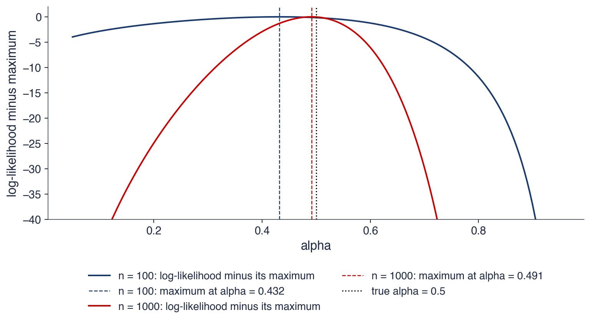
ARCH(1) simulat cu \(\omega = \alpha = 0{,}5\); \(\ell(\alpha)\) cu \(\omega = 1 - \alpha\), ca în SFElikarch1; fiecare curbă minus maximul ei
Graficul arată contururile log-verosimilității unui GARCH(1,1) simulat cu \(\omega = 0{,}1\),\(\alpha = 0{,}1\) și \(\beta = 0{,}8\), ca funcție de \((\alpha, \beta)\), minus maximul ei. Constanta \(\omega\) este fixată astfel încît varianța necondiționată a modelului să fie egală cu varianța de selecție, ceea ce reduce problema la doi parametri. Linia întreruptă marchează frontiera IGARCH, \(\alpha + \beta = 1\).
Cu \(n = 500\) de observații, maximul pe grilă este la \(\alpha = 0{,}04\) și \(\beta = 0{,}63\), departe de valorile adevărate, iar contururile nu se închid în jurul lui: verosimilitatea scade foarte puțin de-a lungul unei direcții întregi. Cu \(n = 2000\), maximul este la \(\alpha = 0{,}10\) și \(\beta = 0{,}78\), iar contururile devin elipse închise în jurul valorilor adevărate.
Forma contururilor are o explicație. De-a lungul unei creste lungi și plate, \(\alpha\) și \(\beta\) se compensează: un \(\alpha\) mai mic și un \(\beta\) diferit pot produce traiectorii ale varianței aproape la fel de plauzibile. Erorile celor două estimări sînt, de aceea, puternic corelate negativ, iar GARCH are nevoie de eșantioane lungi, de ordinul miilor de observații zilnice, pentru a fi estimat precis.
Pe scurt
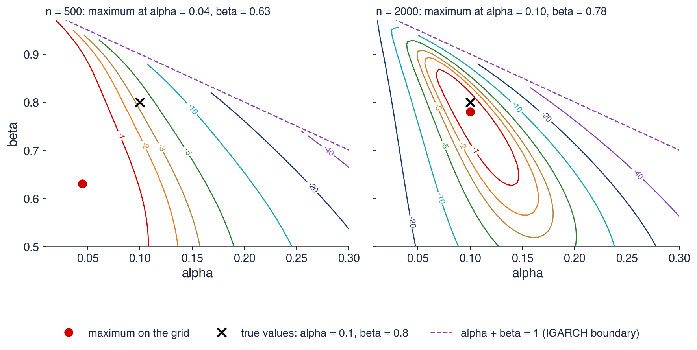
GARCH(1,1) simulat, \(\omega = 0{,}1\), \(\alpha = 0{,}1\), \(\beta = 0{,}8\); \(\omega\) fixat astfel încît varianța necondiționată să fie egală cu varianța de selecție, ca în SFElikgarch; contururi: log-verosimilitatea minus maximul ei
\(n = 500\): maximul în \((0{,}04; 0{,}63)\), departe de valorile adevărate; \(n = 2000\): \((0{,}10; 0{,}78)\)
Interpretare: o creastă lungă și plată, de-a lungul căreia \(\alpha\) și \(\beta\) se compensează: GARCH are nevoie de eșantioane lungi
Tabelul estimează GARCH(1,1) cu inovații Normale pentru S&P 500 în două feluri: printr-o implementare directă, care scrie \(-\ell(\theta)\) din (9.7) și o minimizează numeric sub restricția \(\alpha + \beta < 1\), și cu pachetul Python arch. Estimările coincid pînă la a treia zecimală semnificativă: \(\mu\) este 0,0614 față de 0,0615, \(\omega\) 0,0253 față de 0,0254, \(\alpha\) 0,1205 față de 0,1206 și \(\beta\) 0,8600 față de 0,8599. Cele două variante diferă doar prin valoarea inițială a lui \(\sigma_t^2\) și prin algoritmul de optimizare, ceea ce explică și diferența mică a log-verosimilității maxime, −9 219,9 față de −9 218,0.
Erorile standard (SE, standard errors) se pot calcula în două feluri. Eroarea standard clasică vine din inversa matricei hessiene, adică din curbura lui \(\ell\) în maxim, și presupune că inovațiile sînt într-adevăr Normale. Eroarea standard robustă (Bollerslev & Wooldridge, 1992) rămîne validă și cînd \(z_t\) nu este Normal. Pentru S&P 500, erorile clasice sînt 0,0098 pentru \(\mu\), 0,0030 pentru \(\omega\), 0,0086 pentru \(\alpha\) și 0,0091 pentru \(\beta\), iar cele robuste sînt 0,0100, 0,0048, 0,0118 și 0,0125.
Erorile standard robuste ale parametrilor varianței sînt mai mari: de circa 1,4 ori pentru \(\alpha\) și \(\beta\) și de 1,6 ori pentru \(\omega\), în timp ce pentru \(\mu\) cele două erori aproape coincid. Cînd \(z_t\) are cozi groase, erorile clasice supraestimează precizia estimărilor din ecuația varianței, iar intervalele de încredere construite cu ele sînt prea înguste.
Pe scurt
S&P 500, GARCH(1,1)-N
pas cu pas (SE)
arch
SE clasică
SE robustă
\(\mu\)
\(0{,}0614\) (\(0{,}0098\))
\(0{,}0615\)
\(0{,}0098\)
\(0{,}0100\)
\(\omega\)
\(0{,}0253\) (\(0{,}0030\))
\(0{,}0254\)
\(0{,}0030\)
\(0{,}0048\)
\(\alpha\)
\(0{,}1205\) (\(0{,}0086\))
\(0{,}1206\)
\(0{,}0086\)
\(0{,}0118\)
\(\beta\)
\(0{,}8600\) (\(0{,}0091\))
\(0{,}8599\)
\(0{,}0091\)
\(0{,}0125\)
Pas cu pas: scriem \(-\ell(\theta)\) în Python și o minimizăm cu scipy.optimize.minimize, cu restricția \(\alpha + \beta < 1\)
cele două variante diferă doar prin valoarea inițială a lui \(\sigma_t^2\) și prin algoritmul de optimizare; log-verosimilitatea \(-9219{,}9\) față de \(-9218{,}0\)
SE (standard error, eroarea standard) clasică: din inversa matricei hessiene (curbura lui \(\ell\)); robustă: validă și cînd \(z_t\) nu este Normal Bollerslev & Wooldridge (1992)
Interpretare: SE robuste ale lui \(\alpha\) și \(\beta\) sînt de circa 1,4 ori mai mari (1,6 pentru \(\omega\), 1,02 pentru \(\mu\)): cînd \(z_t\) are cozi groase, SE clasice supraestimează precizia parametrilor varianței
Estimarea prin cvasi-verosimilitate maximă (QMLE, quasi-maximum likelihood estimation) maximizează verosimilitatea Normală (9.7) chiar dacă \(z_t\) nu este Normal. Bollerslev & Wooldridge (1992) au arătat că estimările rămîn consistente dacă media \(\mu\) și varianța condiționată \(\sigma_t^2\) sînt corect specificate. Motivul este că derivatele log-verosimilității Normale au media zero ori de cîte ori primele două momente condiționate sînt corecte, oricare ar fi restul distribuției.
Erorile standard clasice sînt însă greșite, deoarece egalitatea dintre hessiană și varianța derivatelor, valabilă cînd distribuția presupusă este cea adevărată, nu mai are loc. Eroarea standard robustă, de tip „sandwich”, combină cele două matrice, \(A^{-1}BA^{-1}\), unde \(A\) este hessiana, iar \(B\) este varianța derivatelor log-verosimilității. Cînd inovațiile sînt Normale, \(A\) și \(B\) coincid, iar formula se reduce la cea clasică.
Din aceste rezultate decurg cîteva reguli practice. Se raportează erorile standard robuste, care sînt opțiunea implicită în pachetul arch. Se folosesc cel puțin 1000–2000 de observații zilnice, iar randamentele se exprimă în procente, pentru a evita problemele numerice cauzate de un \(\omega\) foarte mic. O estimare pe frontieră, cu \(\alpha + \beta = 1\), nu are o eroare standard obișnuită și se raportează ca IGARCH. QMLE este consistentă, dar nu eficientă: o distribuție mai potrivită a inovațiilor dă estimări mai precise, subiectul secțiunii următoare.
Pe scurt
QMLE (quasi-maximum likelihood estimation, estimarea prin cvasi-verosimilitate maximă): maximizăm verosimilitatea Normală chiar dacă \(z_t\) nu este Normal
dar SE clasice sînt greșite: folosim SE robuste (de tip „sandwich”)
Reguli practice
raportăm SE robuste (opțiunea implicită în arch)
folosim cel puțin 1000–2000 de observații zilnice; randamentele în % evită problemele numerice cauzate de un \(\omega\) foarte mic
o estimare pe frontieră (\(\alpha + \beta = 1\)) nu are o eroare standard obișnuită: o raportăm ca IGARCH
O distribuție mai potrivită a inovațiilor dă estimări mai eficiente: secțiunea următoare
Sinteza secțiunii
Log-verosimilitatea GARCH, (9.7), se maximizează numeric, cu varianțele calculate recursiv. Pe date simulate, ea este plată la eșantioane mici și are o creastă de-a lungul căreia \(\alpha\) și \(\beta\) se compensează, de aceea GARCH cere eșantioane lungi. Pe S&P 500, implementarea directă și pachetul dau aceleași estimări, iar erorile standard robuste ale parametrilor varianței sînt de 1,4–1,6 ori mai mari decît cele clasice. Secțiunea următoare înlocuiește inovațiile Normale cu distribuții cu cozi groase.
Inovații cu cozi groase
GARCH cu inovații Normale explică doar o parte din boltirea randamentelor. Secțiunea introduce inovațiile Student-t și t asimetrice, le compară pe S&P 500 cu teste ale raportului de verosimilitate și verifică ajustarea cozilor cu grafice QQ ale reziduurilor standardizate.
Un GARCH cu inovații Normale explică o parte din cozile groase prin variația lui \(\sigma_t\), dar nu pe toate. Randamentele S&P 500 au boltirea 13,7, în timp ce reziduurile standardizate \(\hat z_t = \hat\varepsilon_t/\hat\sigma_t\) ale unui GARCH(1,1) Normal au boltirea 4,7. Dacă modelul varianței este corect, cozile groase rămase trebuie să vină din distribuția lui \(z_t\).
Prima alegere este distribuția Student-t standardizată cu \(\nu > 2\) grade de libertate (Bollerslev, 1987), din Capitolul 2. Dacă \(t_\nu\) este o variabilă Student-t cu \(\nu\) grade de libertate, \(z_t = t_\nu\sqrt{(\nu - 2)/\nu}\) are varianța 1, cum cere (9.1). Un \(\nu\) mic înseamnă cozi groase: coeficientul de boltire este \(3 + 6/(\nu - 4)\) pentru \(\nu > 4\), iar pentru \(\nu \to \infty\) se obține distribuția Normală. Parametrul \(\nu\) se estimează împreună cu \((\mu, \omega, \alpha, \beta)\), prin maximizarea log-verosimilității cu densitatea Student-t în locul celei Normale.
A doua alegere este distribuția t asimetrică a lui Hansen (1994), care adaugă un parametru de asimetrie \(\lambda \in (-1, 1)\);\(\lambda < 0\) înseamnă o coadă stîngă mai lungă decît cea dreaptă. Cele trei modele sînt incluse unul în altul, Normal \(\subset\) t \(\subset\) t asimetrică, astfel încît se pot compara prin teste ale raportului de verosimilitate sau prin criteriile AIC și BIC (Capitolul 6).
Pe scurt
GARCH cu \(z_t\) Normale explică doar o parte din boltire: randamentele S&P 500 au \(13{,}7\), reziduurile standardizate \(\hat z_t = \hat\varepsilon_t/\hat\sigma_t\) au \(4{,}7\)
cozile groase rămase trebuie să vină din distribuția lui \(z_t\)
\(t_\nu\): o variabilă Student-t cu \(\nu\) grade de libertate; \(z_t = t_\nu\sqrt{(\nu - 2)/\nu}\) are varianța 1
un \(\nu\) mic înseamnă cozi groase: coeficientul de boltire \(3 + 6/(\nu - 4)\) pentru \(\nu > 4\); \(\nu \to \infty\): distribuția Normală
\(\nu\) se estimează împreună cu \((\mu, \omega, \alpha, \beta)\)
t asimetricăHansen (1994): încă un parametru \(\lambda \in (-1, 1)\); \(\lambda < 0\): o coadă stîngă mai lungă
modele incluse unul în altul: Normal \(\subset\) t \(\subset\) t asimetrică; le comparăm prin teste ale raportului de verosimilitate sau prin AIC/BIC (Capitolul 6)
Tabelul estimează GARCH(1,1) pe S&P 500 cu cele trei distribuții. Cu inovații Normale, \(\omega = 0{,}0254\),\(\alpha = 0{,}121\),\(\beta = 0{,}860\), log-verosimilitatea maximă este −9 218,0, iar persistența 0,980. Cu inovații Student-t, \(\omega = 0{,}0157\),\(\alpha = 0{,}123\),\(\beta = 0{,}872\),\(\hat\nu = 6{,}26\), log-verosimilitatea este −9 062,5, iar persistența 0,995. Cu inovații t asimetrice, \(\omega = 0{,}0153\),\(\alpha = 0{,}120\),\(\beta = 0{,}872\),\(\hat\nu = 6{,}92\),\(\hat\lambda = -0{,}114\), log-verosimilitatea este −9 038,4, iar persistența 0,993.
Statistica raportului de verosimilitate este \(2(\ell_1 - \ell_0)\), unde \(\ell_1\) și \(\ell_0\) sînt log-verosimilitățile maxime ale modelului mai mare și ale celui mai mic. Pentru t față de Normal ea este 311,0, iar pentru t asimetrică față de t este 48,1; ambele depășesc cu mult valoarea critică \(\chi^2_{0{,}95}(1) = 3{,}84\) pentru o restricție, deci fiecare test respinge modelul mai mic. Pentru primul test, modelul Normal corespunde limitei \(\nu \to \infty\), la marginea spațiului parametrilor, astfel încît distribuția \(\chi^2(1)\) este doar o aproximare; la o statistică de 311 concluzia nu depinde de această aproximare. Estimarea \(\hat\nu = 6{,}26\) implică pentru inovații o boltire de \(3 + 6/2{,}26 \approx 5{,}7\), iar \(\hat\lambda = -0{,}114\) arată că scăderile mari sînt mai frecvente decît creșterile mari.
Parametrii varianței aproape nu se schimbă de la o distribuție la alta: \(\alpha\) rămîne în jur de 0,12, iar \(\beta\) între 0,86 și 0,87. Distribuția inovațiilor contează mai puțin pentru traiectoria lui \(\sigma_t\) și foarte mult pentru cuantilele din coadă, deci pentru VaR, unde intervine direct prin cuantila lui \(z_t\) (Secțiunea 12).
Pe scurt
GARCH(1,1)
\(\omega\)
\(\alpha\)
\(\beta\)
\(\nu\)
\(\lambda\)
log-verosim.
\(\alpha + \beta\)
Normală
\(0{,}0254\)
\(0{,}121\)
\(0{,}860\)
–
–
\(-9218{,}0\)
\(0{,}980\)
Student-t
\(0{,}0157\)
\(0{,}123\)
\(0{,}872\)
\(6{,}26\)
–
\(-9062{,}5\)
\(0{,}995\)
t asimetrică
\(0{,}0153\)
\(0{,}120\)
\(0{,}872\)
\(6{,}92\)
\(-0{,}114\)
\(-9038{,}4\)
\(0{,}993\)
Statistica raportului de verosimilitate \(2(\ell_1 - \ell_0)\) (\(\ell_1\), \(\ell_0\): log-verosimilitățile maxime ale modelului mai mare și ale celui mai mic): t față de Normal \(311{,}0\) (o restricție, \(\chi^2_{0{,}95}(1) = 3{,}84\)); t asimetrică față de t \(48{,}1\): ambele resping modelul mai mic
\(\hat\nu = 6{,}26\): cozi mult mai groase decît la distribuția Normală; \(\hat\lambda = -0{,}114\): scăderile mari sînt mai frecvente decît creșterile mari
Interpretare: \(\alpha\) și \(\beta\) aproape nu se schimbă; distribuția inovațiilor contează pentru cuantilele din coadă (VaR), mai puțin pentru \(\sigma_t\)
Un grafic QQ (cuantilă–cuantilă, quantile–quantile) reprezintă cuantilele de selecție ale reziduurilor standardizate în funcție de cuantilele distribuției presupuse; dacă distribuția este corectă, punctele stau pe prima bisectoare. Panoul din stînga compară reziduurile modelului GARCH cu inovații Normale cu distribuția Normală. Punctele urmează dreapta în centru, dar coada stîngă coboară mult sub ea: cuantila de selecție de 0,1% este −4,81, față de −3,09 pentru distribuția Normală.
Panoul din dreapta compară reziduurile modelului GARCH-t cu distribuția t standardizată cu \(\hat\nu = 6{,}3\). Cuantila de 0,1% este −4,79, față de −4,19 teoretic, mult mai aproape. Punctele rămîn totuși sub dreaptă la ambele capete: cele mai mari scăderi sînt mai adînci decît prevede distribuția t, iar cele mai mari creșteri sînt mai mici decît prevede ea.
Problema rămasă este așadar coada stîngă și, mai general, asimetria: o distribuție simetrică nu poate avea în același timp o coadă stîngă mai groasă și o coadă dreaptă mai subțire. Graficul justifică inovațiile t asimetrice din slide-ul anterior și modelele cu efect de levier din Secțiunea 8.
Pe scurt
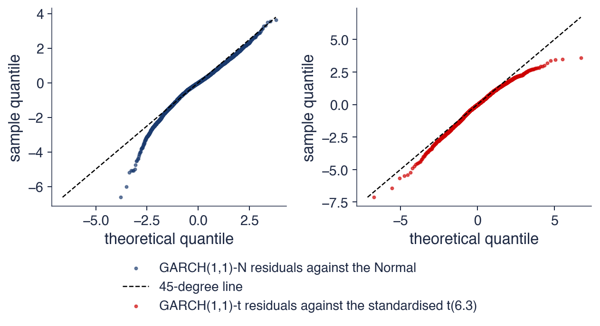
Stînga: reziduurile modelului GARCH cu inovații Normale față de distribuția Normală: cuantila de 0,1% este \(-4{,}81\), față de \(-3{,}09\) teoretic
Dreapta: reziduurile GARCH-t față de t standardizată cu \(\hat\nu = 6{,}3\): \(-4{,}79\) față de \(-4{,}19\), mult mai aproape; cele mai mari scăderi rămîn mai adînci
Interpretare: problema este coada stîngă: un motiv pentru inovații asimetrice și pentru modele asimetrice (secțiunea 8)
Variația lui \(\sigma_t\) reduce boltirea de la 13,7 pentru randamente la 4,7 pentru reziduurile standardizate, iar restul cozilor trebuie descris de distribuția lui \(z_t\). Pe S&P 500, inovațiile Student-t (\(\hat\nu = 6{,}26\)) și apoi t asimetrice (\(\hat\lambda = -0{,}114\)) cresc semnificativ verosimilitatea, fără să schimbe parametrii varianței. Graficele QQ arată că problema rămasă este coada stîngă. Secțiunea următoare estimează GARCH(1,1)-t pe șase piețe.
GARCH pe șase piețe
Secțiunea aplică modelul GARCH(1,1) cu inovații Student-t pe trei indici de acțiuni, S&P 500, DAX și BET, pe Bitcoin și pe două acțiuni de la Bursa de Valori București (BVB), Banca Transilvania (TLV) și OMV Petrom (SNP). Ea compară persistența, cozile și volatilitatea pe termen lung, urmărește volatilitatea condiționată în crize și măsoară cît durează un șoc de volatilitate pe fiecare piață.
Tabelul raportează estimările pe randamente logaritmice zilnice în procente, pînă la 18 septembrie 2026: S&P 500, DAX și BET din 2000, Bitcoin din 2014, TLV și SNP din 2010. Erorile standard robuste ale lui \(\hat\alpha\) și \(\hat\beta\) sînt între 0,010 și 0,041. Timpul de înjumătățire este în zile, iar volatilitățile pe termen lung și de selecție sînt anualizate cu numărul efectiv de observații pe an (aproximativ 252 pentru acțiuni și 365 pentru Bitcoin), în procente.
Indicii au persistența între 0,9907 și 0,9947: 0,9947 pentru S&P 500, 0,9922 pentru DAX și 0,9907 pentru BET, cu timpi de înjumătățire de 131, 88 și 74 de zile de tranzacționare. În apropiere de 1, timpul de înjumătățire este foarte sensibil la persistență, de aceea se calculează din estimația nerotunjită. Acțiunile BVB au o memorie mai scurtă: TLV are persistența 0,9630 și timpul de înjumătățire 18 zile, iar SNP 0,9425 și 12 zile. BET are cel mai mare \(\alpha\), 0,192, adică cea mai puternică reacție la știrile unei zile, compensată de un \(\beta\) mai mic, 0,799.
Toate estimările lui \(\nu\) sînt între 3,2 (Bitcoin) și 7,1 (DAX): inovațiile au cozi groase pe toate piețele. Volatilitatea pe termen lung implicată de (9.4) depășește volatilitatea de selecție peste tot: 27,3% față de 19,2% pentru S&P 500, 25,9% față de 22,4% pentru DAX, 34,7% față de 22,1% pentru BET, 28,2% față de 26,5% pentru TLV și 25,6% față de 24,5% pentru SNP. Diferența este cea mai mare acolo unde persistența este cea mai apropiată de 1, iar slide-ul următor explică de ce.
Pe scurt
din
\(\alpha\)
\(\beta\)
\(\nu\)
\(\alpha + \beta\)
înjumătățire
vol. termen lung
vol. selecție
S&P 500
2000
\(0{,}123\)
\(0{,}872\)
\(6{,}26\)
\(0{,}9947\)
131
27,3
19,2
DAX
2000
\(0{,}097\)
\(0{,}895\)
\(7{,}08\)
\(0{,}9922\)
88
25,9
22,4
BET
2000
\(0{,}192\)
\(0{,}799\)
\(5{,}01\)
\(0{,}9907\)
74
34,7
22,1
Bitcoin
2014
\(0{,}109\)
\(0{,}891\)
\(3{,}18\)
\(1{,}000\)
–
–
66,6
TLV
2010
\(0{,}139\)
\(0{,}824\)
\(4{,}91\)
\(0{,}9630\)
18
28,2
26,5
SNP
2010
\(0{,}135\)
\(0{,}807\)
\(4{,}81\)
\(0{,}9425\)
12
25,6
24,5
Randamente logaritmice zilnice în % pînă la 18 septembrie 2026; SE robuste pentru \(\hat\alpha\) și \(\hat\beta\) între 0,010 și 0,041; timpul de înjumătățire în zile; volatilitățile anualizate cu numărul efectiv de observații pe an, în %
Indicii: \(\alpha + \beta\) între 0,9907 și 0,9947, timpi de înjumătățire de 74–131 de zile de tranzacționare; acțiunile BVB: memorie mai scurtă (TLV 18 zile, SNP 12 zile)
BET: cel mai mare \(\alpha\) (0,192): o reacție mai puternică la știri; toate valorile \(\hat\nu\) sînt între 3,2 și 7,1: cozi groase peste tot
Pentru Bitcoin, \(\hat\alpha + \hat\beta = 1{,}0000\): estimarea este pe frontiera \(\alpha + \beta < 1\), iar modelul este un IGARCH. Nu există timp de înjumătățire și nici volatilitate pe termen lung, de aceea tabelul are liniuțe în aceste coloane. Modelul se comportă ca un EWMA cu \(\lambda \approx 0{,}891\), valoarea lui \(\hat\beta\), care reacționează mai repede decît EWMA cu \(\lambda = 0{,}94\) al RiskMetrics.
Estimarea \(\hat\nu = 3{,}18\) arată cozi extrem de groase. Deoarece \(\nu < 4\), momentul de ordinul patru al lui \(z_t\) nu există, deci boltirea inovațiilor este infinită, chiar înainte de a ține seama de variația lui \(\sigma_t\).
Întrebare pentru sală: pentru S&P 500, volatilitatea pe termen lung este 27,3%, iar volatilitatea de selecție 19,2%. Este greșit modelul? Răspuns: nu neapărat. Varianța pe termen lung \(\bar\sigma^2 = \omega/(1 - \alpha - \beta)\) se obține împărțind la \(1 - \alpha - \beta = 0{,}0053\), un număr mic și imprecis: o eroare de cîteva miimi în persistență schimbă numitorul cu zeci de procente. Același GARCH cu inovații Normale, cu persistența 0,980, dă 18,1%. Nivelul pe termen lung este cel mai puțin sigur rezultat al unui GARCH persistent.
Pe scurt
Bitcoin: \(\hat\alpha + \hat\beta = 1{,}0000\), pe frontiera \(\alpha + \beta < 1\): un IGARCH
nu există timp de înjumătățire și nici volatilitate pe termen lung: modelul se comportă ca un EWMA cu \(\lambda \approx 0{,}891\)
\(\hat\nu = 3{,}18\): cozi extrem de groase (momentul de ordinul patru al lui \(z_t\) nu există)
Întrebare pentru sală: S&P 500: volatilitatea pe termen lung 27,3%, volatilitatea de selecție 19,2%. Este greșit modelul?
Răspuns: nu neapărat: \(\bar\sigma^2 = \omega/(1 - \alpha - \beta)\) se împarte la \(1 - \alpha - \beta = 0{,}0053\), un număr mic și imprecis
GARCH cu inovații Normale dă 18,1%; nivelul pe termen lung este cel mai puțin sigur rezultat al unui GARCH persistent
Graficul arată volatilitatea condiționată estimată \(\hat\sigma_t\) a modelului GARCH(1,1)-t, anualizată, pentru S&P 500 (sus) și DAX (jos), iar linia întreruptă este volatilitatea de selecție anualizată. Graficul transformă norul de randamente din primul grafic al capitolului într-o curbă: nivelul riscului zi de zi.
Pentru S&P 500, volatilitatea condiționată atinge vîrfuri de 93% pe 16 octombrie 2008 și de 111% pe 17 martie 2020. Mediana ei este 14%, iar la 18 septembrie 2026 este 12%. Mediana se află sub volatilitatea de selecție de 19,2%: distribuția volatilității condiționate este asimetrică la dreapta, cu multe zile liniștite și puține zile cu volatilitate foarte mare, care trag media în sus.
DAX are aceleași episoade, în 2008 și în 2020, dar și perioade agitate proprii, ca 2002–2003, cînd volatilitatea lui a urcat mai sus decît cea a S&P 500. După fiecare vîrf, ambele curbe coboară treptat, nu brusc: aceasta este persistența estimată în tabelul anterior.
Pe scurt
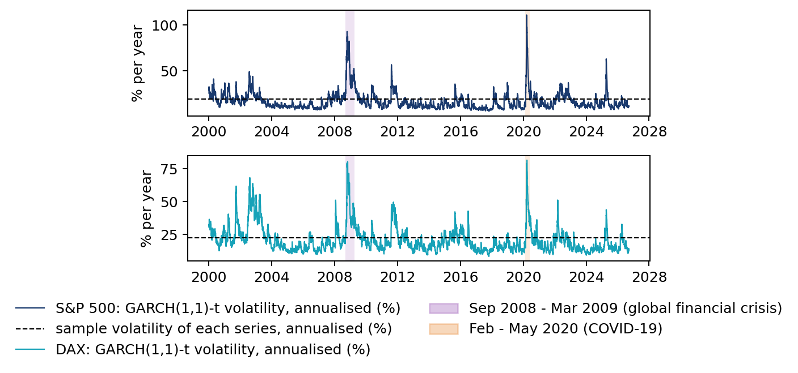
Volatilitatea GARCH(1,1)-t \(\hat\sigma_t\), anualizată, ca în SFEvolgarchest; linia întreruptă: volatilitatea de selecție
S&P 500: vîrfuri de 93% (16 octombrie 2008) și 111% (17 martie 2020); mediana 14%; la 18 septembrie 2026: 12%
Pentru BET, cel mai înalt vîrf al volatilității condiționate anualizate este în criza financiară, 117% pe 15 octombrie 2008, iar vîrful din 2020 este mai mic, 88%. Curba BET are mai multe vîrfuri scurte decît cea a S&P 500, în acord cu un \(\alpha\) mai mare și un \(\beta\) mai mic.
Pentru Bitcoin, panoul de jos are o altă scară: volatilitatea condiționată atinge 301% pe 13 martie 2020, iar mediana ei este 59%, de 4,1 ori mai mare decît mediana S&P 500, de 14%. Curba Bitcoin nu are perioade lungi de calm comparabile cu cele ale indicilor de acțiuni.
Graficul arată și un fapt comun. Șocul din martie 2020 a lovit toate piețele în aceeași săptămînă, de la indicele american la piața din București și la Bitcoin, deși ele diferă mult prin nivelul obișnuit al volatilității.
Pe scurt
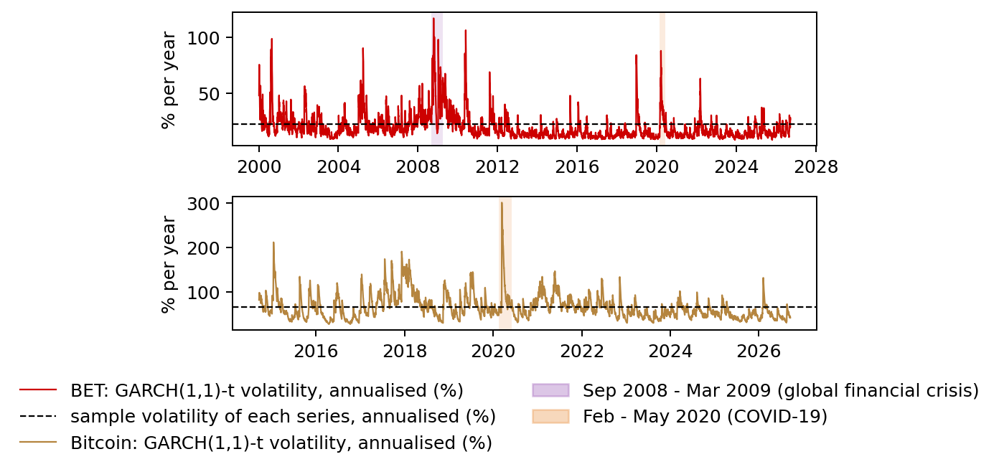
BET: cel mai înalt vîrf în 2008 (117%, 15 octombrie 2008), mai mic în 2020 (88%); Bitcoin: 301% pe 13 martie 2020, mediana 59%
Interpretare: șocul din 2020 a afectat toate piețele în aceeași săptămînă; volatilitatea mediană a Bitcoin este de 4,1 ori mai mare decît cea a S&P 500 (14%)
Graficul arată ponderea unui șoc de varianță rămasă după \(h\) zile, \((\alpha + \beta)^h\), pentru fiecare piață, cu persistențele estimate. Timpul de înjumătățire este punctul în care curba trece de linia orizontală 1/2. Cu cît curba coboară mai încet, cu atît piața „ține minte” mai mult o criză.
După o criză, S&P 500 are nevoie de circa jumătate de an, 131 de zile de tranzacționare, ca să înjumătățească varianța în exces; după 250 de zile, mai rămîne aproximativ un sfert din șoc. DAX și BET urmează la 88 și 74 de zile. Banca Transilvania și OMV Petrom uită mult mai repede, în 18 și, respectiv, 12 zile de tranzacționare, adică în mai puțin de o lună. Pentru Bitcoin, curba rămîne la 1: în modelul IGARCH un șoc nu se înjumătățește niciodată.
Diferențele au consecințe practice. Pentru o prognoză a volatilității pe trei luni, modelul S&P 500 păstrează aproape tot șocul unei crize recente, în timp ce modelul OMV Petrom l-a uitat aproape complet. Persistența estimată determină astfel cît de mult contează condițiile de azi pentru riscul de peste cîteva luni.
Pe scurt
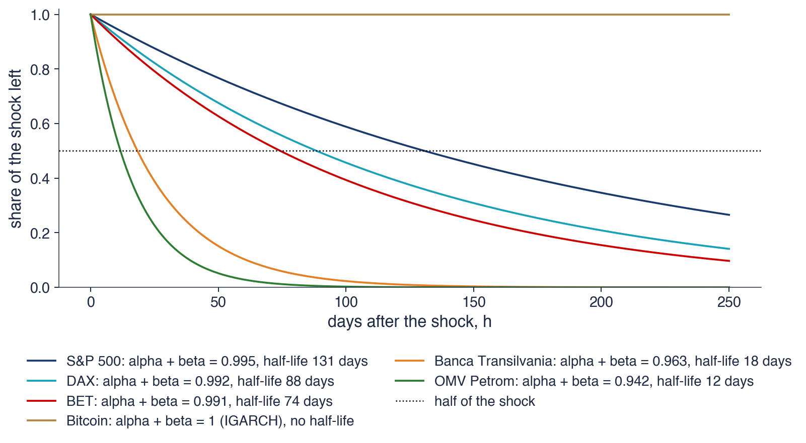
Ponderea unui șoc de varianță rămasă după \(h\) zile: \((\alpha + \beta)^h\); timpul de înjumătățire este punctul în care curba trece de 1/2
Interpretare: după o criză, S&P 500 are nevoie de circa jumătate de an ca să înjumătățească varianța în exces; OMV Petrom de circa două săptămîni; Bitcoin, niciodată
Pe toate cele șase piețe, GARCH(1,1)-t are o persistență ridicată și inovații cu cozi groase (\(\hat\nu\) între 3,2 și 7,1). Indicii au timpi de înjumătățire de 74–131 de zile, acțiunile BVB de 12–18 zile, iar Bitcoin este un IGARCH fără revenire la medie. Volatilitatea pe termen lung a unui model foarte persistent este imprecisă, iar volatilitatea condiționată arată aceleași crize pe toate piețele, la niveluri foarte diferite. Secțiunea următoare adaugă faptul stilizat pe care GARCH(1,1) nu îl poate reproduce: efectul de levier.
Asimetria și efectul de levier
GARCH(1,1) răspunde la mărimea șocului, nu la semnul lui. Secțiunea prezintă explicațiile efectului de levier, cele două modele asimetrice standard, GJR-GARCH și EGARCH, curba de impact a știrilor ca instrument de comparare a lor și măsoară asimetria pe șase piețe.
Efectul de levier din Secțiunea 1, documentat de Christie (1982), are două explicații. Explicația prin levier propriu-zis: un preț mai mic al acțiunii crește raportul dintre datorii și capitalurile proprii ale firmei, deci acțiunea devine mai riscantă. Explicația prin feedback-ul volatilității (volatility feedback): știrile despre un risc mai mare cresc randamentul cerut de investitori, iar prețurile scad imediat. Cauzalitatea are sensuri opuse în cele două explicații, dar ambele leagă scăderile de preț de o volatilitate mai mare.
GARCH(1,1) nu poate surprinde efectul, deoarece \(\sigma_t^2\) depinde de \(\varepsilon_{t-1}^2\), nu de semnul lui \(\varepsilon_{t-1}\). Semne că lipsește ceva au apărut deja: graficul QQ din Secțiunea 6 avea o coadă stîngă prea adîncă, iar distribuția t asimetrică a dat \(\hat\lambda < 0\).
Instrumentul pentru a compara modelele din acest punct de vedere este curba de impact a știrilor (NIC, news impact curve) a lui Engle & Ng (1993): varianța \(\sigma_t^2\) ca funcție de șocul de ieri \(\varepsilon_{t-1}\), cu \(\sigma_{t-1}^2\) fixat la varianța necondiționată. Pentru GARCH(1,1), curba este parabola \(\omega + \alpha\varepsilon_{t-1}^2 + \beta\bar\sigma^2\), simetrică față de zero; un model cu efect de levier are o curbă mai abruptă la stînga decît la dreapta.
Pe scurt
Efectul de levier din secțiunea 1 Christie (1982) are două explicații
explicația prin levier: un preț mai mic al acțiunii crește raportul datorii/capitaluri proprii, deci acțiunea devine mai riscantă
feedback-ul volatilității: știrile despre un risc mai mare scad imediat prețurile
GARCH(1,1) nu îl poate surprinde: \(\sigma_t^2\) depinde de \(\varepsilon_{t-1}^2\), nu de semnul lui \(\varepsilon_{t-1}\)
graficul QQ din secțiunea 6 și t asimetrică (\(\hat\lambda < 0\)) au arătat deja spre coada stîngă
NIC (news impact curve, curba de impact a știrilor) Engle & Ng (1993): \(\sigma_t^2\) ca funcție de \(\varepsilon_{t-1}\), cu \(\sigma_{t-1}^2\) fixat la varianța necondiționată
unde \(I_{t-1} = 1\) dacă \(\varepsilon_{t-1} < 0\) și \(I_{t-1} = 0\) altfel. Variabila \(I_{t-1}\) indică așadar un șoc negativ ieri, iar \(\gamma\) este reacția suplimentară la știrile proaste. După știri bune, panta în \(\varepsilon_{t-1}^2\) este \(\alpha\); după știri proaste este \(\alpha + \gamma\); efectul de levier înseamnă \(\gamma > 0\). Pentru \(z_t\) simetric, jumătate dintre șocuri sînt negative, deci persistența este \(\alpha + \beta + \gamma/2\), nu \(\alpha + \beta\).
Modelul EGARCH (exponential GARCH, GARCH exponențial) al lui Nelson (1991) lucrează cu logaritmul varianței:
Termenul \(|z_{t-1}| - E|z_{t-1}|\) este mărimea șocului standardizat de ieri peste media ei (\(E|z| = \sqrt{2/\pi}\) pentru \(z\) Normal), iar \(\gamma z_{t-1}\) depinde de semn. Deoarece modelul descrie \(\ln\sigma_t^2\), varianța rămîne pozitivă fără restricții de semn asupra parametrilor. Efectul de levier înseamnă aici \(\gamma < 0\): un \(z_{t-1}\) negativ crește \(\ln\sigma_t^2\). Persistența este \(\beta\).
Cele două modele măsoară aceeași asimetrie în feluri diferite: GJR prin pante diferite ale unei parabole, EGARCH printr-o reacție liniară în \(z_{t-1}\) pe scară logaritmică. Ambele, precum și GARCH cu prag (threshold GARCH), sînt tratate în Franke, Härdle & Hafner (2019), secțiunea 13.2.
Graficul arată curbele de impact ale știrilor pentru S&P 500 (stînga) și Bitcoin (dreapta): varianța de azi în funcție de șocul de ieri, pentru GARCH(1,1)-t, GJR-GARCH(1,1)-t și EGARCH(1,1)-t, cu \(\sigma_{t-1}^2\) fixat la varianța de selecție. Linia întreruptă este o estimare nucleu (kernel) Nadaraya–Watson a lui \(E[r_t^2 \mid r_{t-1}]\), o estimare neparametrică a aceleiași relații, care nu presupune niciun model.
Pentru S&P 500, curba GARCH este o parabolă simetrică, dar estimarea neparametrică este clar asimetrică: crește abrupt la stînga și puțin la dreapta. Curbele GJR și EGARCH urmează această formă. În GJR, după o scădere de 2%, varianța de mîine este de 1,62 ori mai mare decît după o creștere de 2%; la dreapta lui zero, curba GJR este practic orizontală, deoarece \(\hat\alpha = 0\).
Pentru Bitcoin, toate cele trei curbe sînt aproape simetrice, iar raportul GJR dintre varianța după o scădere și varianța după o creștere de aceeași mărime este 1,00. Și estimarea neparametrică crește în ambele direcții. Pe piața cripto, creșterile mari ridică volatilitatea la fel de mult ca scăderile mari.
Pe scurt
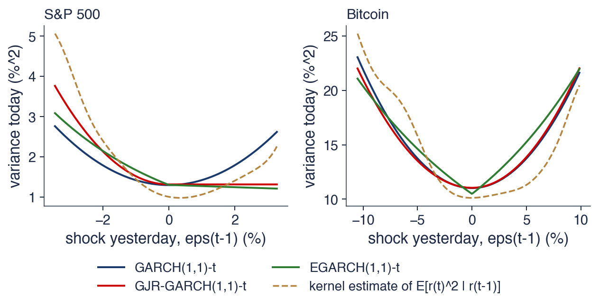
Curbele modelelor: \(\sigma_t^2\) în funcție de \(\varepsilon_{t-1}\), cu \(\sigma_{t-1}^2\) fixat la varianța de selecție; linia întreruptă: o estimare nucleu (Nadaraya–Watson) a lui \(E[r_t^2 \mid r_{t-1}]\), ideea din SFENewsImpactCurve
S&P 500, GJR: după o scădere de 2%, varianța de mîine este de 1,62 ori mai mare decît după o creștere de 2%; Bitcoin: raportul 1,00, o curbă simetrică
Tabelul estimează GJR-GARCH și EGARCH cu inovații Student-t pe cele șase piețe. Statisticile \(t\) folosesc erori standard robuste, iar testul raportului de verosimilitate (LR, likelihood ratio) compară GJR cu GARCH simetric, \(\mathrm{LR} = 2(\ell_{GJR} - \ell_{GARCH})\), cu distribuția \(\chi^2(1)\) sub ipoteza \(\gamma = 0\).
Pentru S&P 500 și DAX, asimetria este foarte puternică. GJR dă \(\hat\alpha = 0{,}000\) pentru ambele, cu \(\hat\gamma = 0{,}205\)(\(t = 10{,}0\), LR 235,7) pentru S&P 500 și \(\hat\gamma = 0{,}163\)(\(t = 8{,}7\), LR 204,5) pentru DAX: doar știrile proaste cresc volatilitatea. EGARCH confirmă, cu \(\hat\gamma = -0{,}165\)(\(t = -15{,}2\)) și \(-0{,}133\)(\(t = -11{,}8\)). Pentru BET și TLV efectul este slab: \(\hat\gamma = 0{,}043\) (LR 4,9, p = 0,026) și 0,065 (LR 7,8, p = 0,005), semnificativ după testul LR, dar BIC, care penalizează fiecare parametru cu \(\ln T\), preferă modelul simetric. Pentru SNP, \(\hat\gamma = 0{,}033\) nu este semnificativ la 5% (p = 0,188).
Bitcoin nu are niciun efect de levier: GJR dă \(\hat\gamma = -0{,}013\) (p = 0,416), iar în EGARCH \(\hat\gamma = 0{,}015\), ușor pozitiv și nesemnificativ (\(t = 1{,}2\)). Efectul de levier apare deci clar pe piețele mature de acțiuni, S&P 500 și DAX, slab pe piața din București și deloc pe Bitcoin, unde creșterile mari cresc volatilitatea la fel de mult ca scăderile mari.
Pe scurt
GJR \(\alpha\)
GJR \(\gamma\)
\(t(\gamma)\)
LR
p
EGARCH \(\gamma\)
\(t(\gamma)\)
S&P 500
\(0{,}000\)
\(0{,}205\)
\(10{,}0\)
\(235{,}7\)
\(<\) 0,001
\({-0{,}165}\)
\({-15{,}2}\)
DAX
\(0{,}000\)
\(0{,}163\)
\(8{,}7\)
\(204{,}5\)
\(<\) 0,001
\({-0{,}133}\)
\({-11{,}8}\)
BET
\(0{,}172\)
\(0{,}043\)
\(2{,}1\)
\(4{,}9\)
0,026
\({-0{,}028}\)
\({-2{,}6}\)
Bitcoin
\(0{,}113\)
\(-0{,}013\)
\(-0{,}7\)
\(0{,}7\)
0,416
\({0{,}015}\)
\({1{,}2}\)
TLV
\(0{,}101\)
\(0{,}065\)
\(2{,}7\)
\(7{,}8\)
0,005
\({-0{,}040}\)
\({-3{,}0}\)
SNP
\(0{,}117\)
\(0{,}033\)
\(1{,}4\)
\(1{,}7\)
0,188
\({-0{,}027}\)
\({-1{,}9}\)
Inovații Student-t; statistici \(t\) cu SE robuste; LR (likelihood ratio, raportul de verosimilitate) \(= 2(\ell_{GJR} - \ell_{GARCH}) \sim \chi^2(1)\)
S&P 500 și DAX: GJR \(\hat\alpha = 0\): doar știrile proaste cresc volatilitatea; un efect de levier foarte puternic
BET și TLV: un efect slab, semnificativ după testul LR, dar BIC preferă modelul GARCH simetric; SNP: nesemnificativ la 5%; Bitcoin: niciun efect (în EGARCH, \(\gamma\) este ușor pozitiv și nesemnificativ)
Interpretare: efectul de levier este o proprietate a piețelor mature de acțiuni; la cripto, creșterile mari cresc volatilitatea la fel de mult ca scăderile mari
Modelele GJR-GARCH, (9.8), și EGARCH, (9.9), permit șocurilor negative să crească volatilitatea mai mult decît cele pozitive. Pentru S&P 500 și DAX, numai știrile proaste cresc volatilitatea, iar după o scădere de 2% varianța S&P 500 de mîine este de 1,62 ori mai mare decît după o creștere de 2%. BET și TLV au o asimetrie slabă, SNP una nesemnificativă, iar Bitcoin niciuna. Secțiunea următoare arată cum se verifică dacă un model estimat a reținut toate aceste trăsături.
Diagnostic
Un model GARCH corect transformă randamentele în reziduuri standardizate aproape i.i.d. Secțiunea prezintă testele aplicate acestor reziduuri, autocorelațiile pe care GARCH le elimină și rezultatele diagnosticului pe S&P 500 și pe celelalte piețe.
Dacă modelul este corect, reziduurile standardizate \(\hat z_t = (r_t - \hat\mu)/\hat\sigma_t\) sînt aproape i.i.d., cu media 0 și varianța 1. Fiecare test de diagnostic verifică o consecință a acestei proprietăți. Statistica Ljung–Box (LB) (Ljung & Box, 1978),\(Q(m) = T(T+2)\sum_{k=1}^{m}\hat\rho_k^2/(T-k)\), unde \(\hat\rho_k\) este autocorelația de selecție la lagul \(k\), are distribuția \(\chi^2(m)\) sub ipoteza lipsei de autocorelație. Aplicată lui \(\hat z_t\) cu \(m = 10\), ea verifică dacă a rămas autocorelație în medie (Capitolul 7).
Aplicată pătratelor \(\hat z_t^2\), împreună cu testul ARCH-LM, aceeași statistică verifică dacă au rămas efecte ARCH (Capitolul 8). Graficul QQ al lui \(\hat z_t\) verifică distribuția presupusă, ca în Secțiunea 6. Testul de asimetrie (sign bias test) al lui Engle & Ng (1993) regresează \(\hat z_t^2\) pe \(I_{t-1}\),\(I_{t-1}\hat\varepsilon_{t-1}\) și \((1 - I_{t-1})\hat\varepsilon_{t-1}\), unde \(I_{t-1}\) indică un șoc negativ. Testul comun \(TR^2 \sim \chi^2(3)\) întreabă dacă semnul și mărimea șocurilor trecute mai anticipează varianța; o respingere înseamnă că modelului îi lipsește asimetria.
Logica diagnosticului este asimetrică. Un test fără respingere nu dovedește că modelul este corect: arată doar că acel test nu găsește o abatere. O respingere, în schimb, arată unde greșește modelul și ce trebuie adăugat.
Pe scurt
Dacă modelul este corect, reziduurile standardizate\(\hat z_t = (r_t - \hat\mu)/\hat\sigma_t\) sînt aproape i.i.d., cu media 0 și varianța 1
\(Q(10)\) pe \(\hat z_t^2\) și testul ARCH-LM: nu au rămas efecte ARCH (Capitolul 8)
graficul QQ al lui \(\hat z_t\): este corectă distribuția presupusă? (secțiunea 6)
Testul de asimetrie (sign bias)Engle & Ng (1993): regresia lui \(\hat z_t^2\) pe \(I_{t-1}\), \(I_{t-1}\hat\varepsilon_{t-1}\) și \((1 - I_{t-1})\hat\varepsilon_{t-1}\)
testul comun \(T R^2 \sim \chi^2(3)\): o respingere înseamnă că semnul șocurilor trecute încă anticipează varianța (lipsește asimetria)
Un diagnostic fără respingere nu dovedește că modelul este corect; o respingere arată unde greșește
Graficul compară autocorelațiile pătratelor randamentelor S&P 500 (bare albastre) cu cele ale pătratelor reziduurilor standardizate ale modelului GARCH(1,1)-t (bare roșii), pentru lagurile 1–50. Liniile întrerupte sînt banda de 95% \(\pm 1{,}96/\sqrt{T} = \pm 0{,}024\), în interiorul căreia ar trebui să cadă autocorelațiile unei serii i.i.d.
Autocorelația lui \(r_t^2\) este 0,31 la lagul 1, și mai mare la lagul 2 și încă 0,053 la lagul 50, cu mult peste bandă la toate lagurile. Autocorelația lui \(\hat z_t^2\) este −0,005 la lagul 1 și nu depășește 0,028 în valoare absolută la niciun lag. Cîteva laguri ies foarte puțin din bandă, cît se așteaptă întîmplător dintr-o bandă de 95% aplicată la 50 de laguri.
Contrastul este rezultatul central al diagnosticului: trei parametri ai ecuației varianței absorb aproape tot volatility clustering din datele zilnice ale S&P 500 de după 2000. Ce rămîne în reziduuri nu mai are structura de memorie lungă a pătratelor randamentelor.
Pe scurt
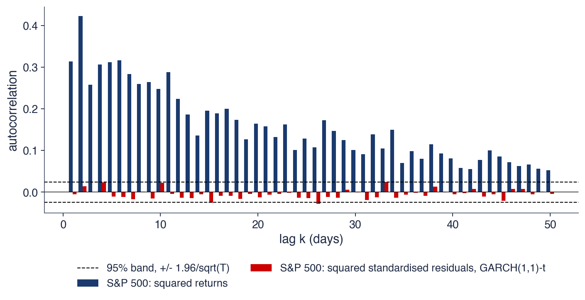
ACF a lui \(r_t^2\): \(0{,}31\) la lagul 1 și încă \(0{,}053\) la lagul 50; ACF a lui \(\hat z_t^2\) (GARCH(1,1)-t): \(-0{,}005\) la lagul 1, cel mult \(0{,}028\) în valoare absolută; banda \(\pm0{,}024\)
Interpretare: trei parametri absorb aproape tot volatility clustering din datele zilnice de după 2000
Tabelul aplică testele pe randamentele S&P 500 și pe reziduurile standardizate a două modele. Pentru randamente, toate testele resping categoric: \(Q(10)\) este 96,3, \(Q(10)\) al pătratelor 6 133, iar ARCH-LM(5) 1 679, toate cu p < 0,001. După GARCH cu inovații Normale, \(Q(10)\) al pătratelor scade la 16,4 (p = 0,089), iar ARCH-LM(5) la 8,0 (p = 0,154); după GARCH-t, la 13,6 (p = 0,192) și la 5,8 (p = 0,326). Efectele ARCH au fost eliminate.
În medie rămîne puțină autocorelație: \(Q(10)\) al lui \(\hat z_t\) este 21,2 (p = 0,020) pentru modelul Normal și 21,9 (p = 0,016) pentru modelul t. Modelul are o medie constantă, deci nu încearcă să descrie autocorelațiile mici ale randamentelor; cu 6 714 observații, chiar autocorelații foarte mici devin semnificative statistic, deși sînt neglijabile economic.
Testul de asimetrie respinge pentru GARCH-t simetric: statistica comună este 40,7 (p < 0,001), iar statistica \(t\) a termenului de semn este 3,56. Modelului îi lipsește asimetria din Secțiunea 8; testul respinge la fel pentru DAX (p < 0,001) și pentru BET (p = 0,009). Pe celelalte piețe, \(Q(10)\) al lui \(\hat z_t^2\) pentru GARCH-t are p între 0,115 (DAX) și 0,993 (TLV): nu a rămas niciun efect ARCH.
Pe scurt
S&P 500
\(Q(10)\) (p)
\(Q(10)\) al pătratelor (p)
ARCH-LM(5) (p)
sign bias \(\chi^2(3)\) (p)
randamente \(r_t\)
\(96{,}3\) (\(<\) 0,001)
\(6133\) (\(<\) 0,001)
\(1679\) (\(<\) 0,001)
–
\(\hat z_t\), GARCH Normal
\(21{,}2\) (0,020)
\(16{,}4\) (0,089)
\(8{,}0\) (0,154)
–
\(\hat z_t\), GARCH-t
\(21{,}9\) (0,016)
\(13{,}6\) (0,192)
\(5{,}8\) (0,326)
\(40{,}7\) (\(<\) 0,001)
GARCH elimină efectele ARCH (\(Q(10)\) al pătratelor: de la \(6133\) la \(13{,}6\)); rămîne puțină autocorelație în medie (modelul are media constantă)
Testul de asimetrie respinge pentru GARCH simetric (\(t\) al semnului \(= 3{,}56\)): lipsește asimetria din secțiunea 8; la fel pentru DAX (p \(<\) 0,001) și BET (p = 0,009)
Celelalte piețe, \(Q(10)\) al lui \(\hat z_t^2\) (GARCH-t): p între 0,115 (DAX) și 0,993 (TLV): nu a rămas niciun efect ARCH
GARCH-t elimină efectele ARCH: \(Q(10)\) al pătratelor scade de la 6 133 pentru randamentele S&P 500 la 13,6 pentru reziduurile standardizate, iar autocorelațiile pătratelor rămase sînt sub 0,03. Testul de asimetrie respinge însă modelul simetric pentru S&P 500, DAX și BET, în acord cu estimările GJR și EGARCH. Secțiunea următoare compară formal modelele simetrice și asimetrice, cu inovații diferite.
Alegerea modelului
Secțiunea combină cele două dimensiuni ale capitolului, ecuația varianței (GARCH, GJR-GARCH, EGARCH) și distribuția inovațiilor (Normală, Student-t, t asimetrică), în nouă modele pentru S&P 500 și le compară cu criteriile informaționale AIC și BIC.
Criteriul informațional Akaike (Akaike, 1974) este \(\mathrm{AIC} = -2\ell + 2k\), iar criteriul informațional bayesian (Schwarz, 1978) este \(\mathrm{BIC} = -2\ell + k\ln T\), unde \(\ell\) este log-verosimilitatea maximă, \(k\) numărul de parametri și \(T\) numărul de observații (Capitolul 6). Ambele echilibrează potrivirea cu complexitatea, iar valoarea mai mică este mai bună. BIC penalizează fiecare parametru cu \(\ln T\), aproximativ 8,8 pentru 6 714 observații, deci mai sever decît AIC, care îl penalizează cu 2.
Tabelul raportează log-verosimilitatea și \(\Delta\)BIC, diferența față de cel mai bun model, pentru combinațiile GARCH, GJR-GARCH și EGARCH cu inovații Normale, Student-t și t asimetrice. Cel mai bun model este EGARCH cu inovații t asimetrice, cu log-verosimilitatea −8 880,3. Urmează GJR cu t asimetrică (\(\Delta\)BIC 49,6) și EGARCH-t (74,8); GARCH cu inovații Normale este ultimul, cu \(\Delta\)BIC 648,9. AIC dă aceeași ordine.
Ambele alegeri contează și se completează. Pornind de la GARCH cu inovații Normale, numai asimetria (EGARCH cu inovații Normale) reduce BIC cu 276, numai cozile groase (GARCH cu t asimetrică) cu 341, iar ambele împreună cu 649. Cu 6 714 observații, chiar și îmbunătățirile mici ale verosimilității devin „semnificative” după orice criteriu, așa că un cîștig în eșantion nu garantează o prognoză mai bună. Testul real este comparația prognozelor în afara eșantionului, din Secțiunea 11.
Pe scurt
AIC (Akaike information criterion, criteriul informațional Akaike) \(= -2\ell + 2k\)Akaike (1974); BIC (Bayesian information criterion, criteriul informațional bayesian) \(= -2\ell + k\ln T\)Schwarz (1978); \(\ell\): log-verosimilitatea maximă, \(k\) parametri, \(T\) observații; valoarea mai mică este mai bună (Capitolul 6)
Normal
Student-t
t asimetrică
log-verosim.
\(\Delta\)BIC
log-verosim.
\(\Delta\)BIC
log-verosim.
\(\Delta\)BIC
GARCH(1,1)
\(-\)9218,0
648,9
\(-\)9062,5
346,7
\(-\)9038,4
307,4
GJR-GARCH(1,1)
\(-\)9086,5
394,7
\(-\)8944,6
119,9
\(-\)8905,1
49,6
EGARCH(1,1)
\(-\)9075,6
372,9
\(-\)8922,1
74,8
\(-\)8880,3
0,0
\(\Delta\)BIC: diferența față de cel mai bun model; AIC dă aceeași ordine
Ambele alegeri contează: pornind de la GARCH cu inovații Normale, doar asimetria (EGARCH cu inovații Normale) reduce BIC cu 276, doar cozile groase (GARCH cu t asimetrică) cu 341, iar ambele împreună cu 649
Interpretare: EGARCH cu inovații t asimetrice cîștigă; cu 6 714 observații chiar și îmbunătățirile mici sînt „semnificative”; comparația prognozelor din secțiunea 11 este testul real
Pe S&P 500, atît asimetria, cît și cozile groase îmbunătățesc mult modelul, iar efectele lor se adună: EGARCH cu inovații t asimetrice are cel mai mic BIC, cu 649 sub GARCH cu inovații Normale. Criteriile informaționale ordonează modelele în eșantion; secțiunea următoare le compară prin calitatea prognozelor.
Prognoza volatilității
Secțiunea derivă prognozele GARCH pe mai mulți pași și varianța randamentului pe mai multe zile, le aplică pe S&P 500 la 18 septembrie 2026, arată structura la termen a volatilității în trei momente diferite și compară prognozele GARCH și EWMA în afara eșantionului, cu funcția de pierdere QLIKE și testul Diebold–Mariano.
Prognoza pentru o zi este cunoscută exact la sfîrșitul zilei \(t\):\(\sigma_{t+1}^2 = \omega + \alpha\varepsilon_t^2 + \beta\sigma_t^2\). Pentru două zile, notînd cu \(E_t\) media condiționată de informația de la sfîrșitul zilei \(t\),\(E_t[\sigma_{t+2}^2] = \omega + \alpha E_t[\varepsilon_{t+1}^2] + \beta\sigma_{t+1}^2 = \omega + (\alpha + \beta)\sigma_{t+1}^2\), deoarece \(E_t[\varepsilon_{t+1}^2] = \sigma_{t+1}^2\). Șocul viitor necunoscut se înlocuiește cu media lui, adică cu varianța lui.
Repetînd argumentul și scăzînd varianța pe termen lung \(\bar\sigma^2 = \omega/(1 - \alpha - \beta)\), se obține prin inducție prognoza (9.5),\(E_t[\sigma_{t+h}^2] = \bar\sigma^2 + (\alpha + \beta)^{h-1}(\sigma_{t+1}^2 - \bar\sigma^2)\), unde \(h\) este orizontul în zile. Prognoza converge spre varianța pe termen lung, de sus după o perioadă agitată și de jos după una liniștită, cu viteza dată de \(\alpha + \beta\).
Varianța randamentului pe \(H\) zile este suma prognozelor zilnice, deoarece randamentele sînt necorelate:
nu \(H\sigma_{t+1}^2\). Regula rădăcinii pătrate a timpului, \(\sigma_{t+1}\sqrt{H}\), presupune o varianță constantă la nivelul de mîine. Ea dă valori prea mari într-o criză, cînd varianța este așteptată să scadă, și prea mici într-o perioadă liniștită, cînd varianța este așteptată să crească.
Pe scurt
Un pas: \(\sigma_{t+1}^2 = \omega + \alpha\varepsilon_t^2 + \beta\sigma_t^2\) este cunoscut la sfîrșitul zilei \(t\)
doi pași: \(E_t[\sigma_{t+2}^2] = \omega + \alpha E_t[\varepsilon_{t+1}^2] + \beta\sigma_{t+1}^2 = \omega + (\alpha + \beta)\sigma_{t+1}^2\), deoarece \(E_t[\varepsilon_{t+1}^2] = \sigma_{t+1}^2\)
Modelul GARCH(1,1)-t estimat pe S&P 500 are persistența \(\alpha + \beta = 0{,}9947\) și varianța pe termen lung \(\bar\sigma^2 = 2{,}972\), adică volatilitatea anualizată de 27,3%. La 18 septembrie 2026, prognoza varianței pentru ziua următoare este \(\sigma_{t+1}^2 = 0{,}509\), mult sub nivelul pe termen lung: piața este într-o perioadă liniștită.
Pentru ziua a zecea, \(E_t[\sigma_{t+10}^2] = 2{,}972 + 0{,}9947^{9}(0{,}509 - 2{,}972) = 2{,}972 + 0{,}953 \times (-2{,}463) = 0{,}624\): varianța este așteptată să crească încet. Varianța randamentului pe 10 zile este, după (9.10), suma celor zece prognoze zilnice, 5,67, deci volatilitatea pe 10 zile este \(\sqrt{5{,}67} = 2{,}38\%\).
Regula rădăcinii pătrate a timpului dă \(\sqrt{10 \times 0{,}509} = 2{,}26\%\), o valoare prea mică, deoarece ignoră creșterea așteptată a volatilității spre nivelul pe termen lung. Corecția depinde însă de \(\bar\sigma^2\), cel mai imprecis rezultat al modelului (Secțiunea 7): pe orizonturi scurte ea este mică, pe orizonturi lungi devine dominantă.
Pe scurt
GARCH(1,1)-t: \(\alpha + \beta = 0{,}9947\), \(\bar\sigma^2 = 2{,}972\); prognoza pentru ziua următoare \(\sigma_{t+1}^2 = 0{,}509\) (sub nivelul pe termen lung)
varianța pe 10 zile: suma celor zece prognoze zilnice \(= 5{,}67\), deci volatilitatea pe 10 zile este \(2{,}38\%\)
regula rădăcinii pătrate a timpului: \(\sqrt{10 \times 0{,}509} = 2{,}26\%\): prea mică, deoarece volatilitatea este așteptată să crească spre nivelul ei pe termen lung
Graficul arată prognozele modelului GARCH(1,1)-t, estimat pe toate datele S&P 500, făcute în trei zile: o zi liniștită (3 noiembrie 2017), vîrful pandemiei COVID-19 (16 martie 2020) și 18 septembrie 2026. Liniile continue sînt volatilitatea zilnică prognozată pentru ziua \(t + h\), anualizată, iar liniile întrerupte sînt volatilitatea medie prognozată pe următoarele \(h\) zile, rădăcina din (9.10) împărțită la \(h\) și anualizată. Linia punctată este volatilitatea pe termen lung, 27,3%.
În ziua liniștită din 2017, volatilitatea prognozată pentru mîine este 7,3%, iar media pe un an este 19,0%. În vîrful COVID-19, volatilitatea pentru mîine este 111,0%, iar media pe un an este încă 84,7%: modelul se așteaptă ca criza să dureze. Curba din 18 septembrie 2026 pornește de la aproximativ 11%, valoarea anualizată a lui \(\sigma_{t+1}^2 = 0{,}509\), și urcă, la fel ca cea din 2017.
Toate curbele se îndreaptă spre același nivel pe termen lung, cu aceeași viteză relativă dată de persistența 0,9947, care este lentă: după 250 de zile niciuna nu l-a atins. Panta structurii la termen (term structure) arată regimul în care se află piața: o curbă crescătoare indică o perioadă liniștită, una descrescătoare o perioadă turbulentă.
Pe scurt
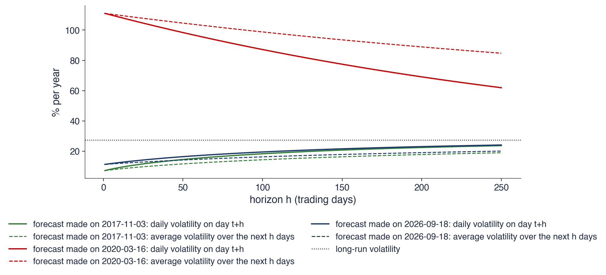
S&P 500, GARCH(1,1)-t estimat pe toate datele; prognoze făcute într-o zi liniștită (3 noiembrie 2017), în vîrful pandemiei COVID-19 (16 martie 2020) și la 18 septembrie 2026
Ziua liniștită: 7,3% mîine, în medie 19,0% pe un an; vîrful COVID-19: 111,0% mîine, încă 84,7% în medie pe un an
Interpretare: toate curbele se îndreaptă spre nivelul pe termen lung (27,3%) cu aceeași viteză redusă: panta structurii la termen arată dacă sîntem într-o perioadă liniștită sau într-una turbulentă
Adevărata varianță \(\sigma_t^2\) nu este observată niciodată, deci o prognoză \(h_t\) se compară cu o aproximare (proxy) zgomotoasă, aici \(r_t^2\). Aproximarea este nedeplasată, \(E_{t-1}[r_t^2] = \sigma_t^2\) cînd \(\mu \approx 0\), dar foarte zgomotoasă, deoarece \(r_t^2 = \sigma_t^2 z_t^2\), iar \(z_t^2\) variază mult de la o zi la alta. De aceea, o regresie a lui \(r_t^2\) pe prognoză are un \(R^2\) mic chiar și pentru o prognoză perfectă (Andersen & Bollerslev, 1998): un \(R^2\) mic nu înseamnă că modelul este slab.
Funcția de pierdere QLIKE (quasi-likelihood) (Patton, 2011) este
\[L(r_t^2, h_t) = \frac{r_t^2}{h_t} + \ln h_t,\]
(9.11)
pînă la o constantă, unde \(h_t\) este prognoza varianței pentru ziua \(t\) făcută la sfîrșitul zilei \(t-1\); valoarea mai mică este mai bună. Ea este, pînă la constante, minus log-verosimilitatea Normală (9.7).Patton (2011) a arătat că QLIKE ordonează corect prognozele chiar dacă se folosește o aproximare zgomotoasă, dar nedeplasată, a varianței. Ea penalizează mai mult prognozele prea mici decît pe cele prea mari, o proprietate potrivită pentru managementul riscului.
Evaluarea se face în afara eșantionului (out-of-sample): din 2015, fiecare prognoză folosește doar date pînă în ziua precedentă, iar modelele se reestimează la fiecare 250 de zile. Testul Diebold–Mariano (DM) (Diebold & Mariano, 1995) întreabă dacă diferența medie a pierderilor a două prognoze este zero. Statistica lui este un raport \(t\) al acestei diferențe medii, calculat cu erori standard robuste la heteroscedasticitate și autocorelație (HAC, heteroskedasticity and autocorrelation consistent).
Pe scurt
Adevăratul \(\sigma_t^2\) nu este observat niciodată: comparăm prognoza \(h_t\) cu o aproximare zgomotoasă, aici \(r_t^2\)
\(E_{t-1}[r_t^2] = \sigma_t^2\) (cu \(\mu \approx 0\)), dar \(r_t^2\) este foarte zgomotos: un \(R^2\) mic chiar și pentru o prognoză perfectă Andersen & Bollerslev (1998)
Funcția de pierdere QLIKEPatton (2011): \(L(r_t^2, h_t) = \dfrac{r_t^2}{h_t} + \ln h_t\) (pînă la o constantă); valoarea mai mică este mai bună
\(h_t\): prognoza varianței pentru ziua \(t\), făcută la sfîrșitul zilei \(t-1\)
ordonează corect prognozele chiar și cu o aproximare zgomotoasă; este minus log-verosimilitatea Normală
penalizează mai mult prognozele prea mici decît pe cele prea mari
În afara eșantionului: din 2015, fiecare prognoză folosește doar date pînă în ziua precedentă; modelele se reestimează la fiecare 250 de zile
testul DM (Diebold–Mariano) Diebold & Mariano (1995): este diferența medie a pierderilor egală cu zero? \(t\) cu erori standard HAC (heteroskedasticity and autocorrelation consistent, robuste la heteroscedasticitate și autocorelație)
Tabelul raportează pierderea QLIKE medie în afara eșantionului, din 2015 pînă în 2026, pentru GARCH-t, GJR-t și EWMA, împreună cu statistica DM pentru GARCH-t față de EWMA; o statistică negativă înseamnă că GARCH-t are o pierdere mai mică. Pentru S&P 500, pe 2 944 de zile, QLIKE este 0,761 pentru GARCH-t, 0,733 pentru GJR-t și 0,819 pentru EWMA, cu \(t = -3{,}69\) (p < 0,001). Pentru DAX, valorile sînt 1,090, 1,064 și 1,121, cu \(t = -3{,}19\) (p = 0,001), iar pentru BET 0,680, 0,674 și 0,788, cu \(t = -2{,}22\) (p = 0,027).
Pe cei trei indici de acțiuni, GARCH-t este semnificativ mai bun decît EWMA, iar GJR-t este și mai bun: asimetria, care a cîștigat în eșantion, cîștigă și în afara lui. Graficul arată diferența cumulată a pierderilor, QLIKE(EWMA) minus QLIKE(GARCH-t): o curbă crescătoare înseamnă că GARCH-t cîștigă. Pentru indici, curbele urcă mai ales în salturi, la începutul perioadelor agitate, cînd EWMA rămîne în urmă.
Pentru Bitcoin, pe 4 279 de zile, QLIKE este 3,383 pentru GARCH-t, 3,401 pentru GJR-t și 3,390 pentru EWMA, iar \(t = -0{,}20\) (p = 0,845): nicio diferență. Rezultatul era de așteptat: GARCH-ul Bitcoin este un IGARCH, adică aproape un EWMA (Secțiunea 7). Pe grafic, curba Bitcoin pierde mult în primele luni din 2015 și recuperează treptat, fără un avantaj stabil al vreunui model.
Pe scurt
2015–2026
zile
QLIKE GARCH-t
QLIKE GJR-t
QLIKE EWMA
DM \(t\), GARCH-t față de EWMA (p)
S&P 500
2 944
\(0{,}761\)
\(0{,}733\)
\(0{,}819\)
\({-3{,}69}\) (\(<\) 0,001)
DAX
2 973
\(1{,}090\)
\(1{,}064\)
\(1{,}121\)
\({-3{,}19}\) (0,001)
BET
2 926
\(0{,}680\)
\(0{,}674\)
\(0{,}788\)
\({-2{,}22}\) (0,027)
Bitcoin
4 279
\(3{,}383\)
\(3{,}401\)
\(3{,}390\)
\({-0{,}20}\) (0,845)
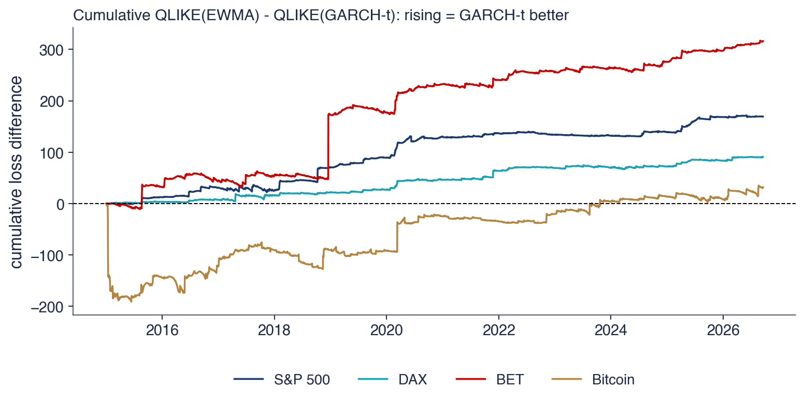
Indicii de acțiuni: GARCH-t este mai bun decît EWMA (\(t < -2\)); GJR-t este și mai bun pentru S&P 500, DAX și BET
Interpretare: Bitcoin: nicio diferență (\(t = -0{,}20\)): GARCH-ul lui este un IGARCH, adică aproape un EWMA (secțiunea 7)
Prognozele GARCH revin spre varianța pe termen lung după (9.5), iar varianța pe mai multe zile este suma prognozelor zilnice, (9.10), nu regula rădăcinii pătrate a timpului. Structura la termen arată dacă piața este liniștită sau agitată. În afara eșantionului, judecat cu QLIKE, GARCH-t este semnificativ mai bun decît EWMA pe cei trei indici de acțiuni, iar GJR-t este și mai bun; pentru Bitcoin, IGARCH și EWMA nu diferă. Secțiunea următoare transformă prognoza volatilității într-un VaR.
VaR 1% dintr-un model GARCH
Secțiunea combină prognoza volatilității cu cuantila inovațiilor pentru a obține un VaR care se schimbă de la o zi la alta. Ea calculează VaR 1% pentru S&P 500 la 18 septembrie 2026, urmărește VaR în timpul crahului COVID-19 și numără depășirile din 2015–2026, ca primă privire asupra backtesting-ului din Capitolul 10.
VaR la nivelul \(\alpha\) este pierderea depășită cu probabilitatea \(\alpha\):\(\mathrm{VaR}_\alpha = -q_\alpha(r_{t+1})\), unde \(q_\alpha\) este cuantila de ordin \(\alpha\) a randamentului (Capitolul 6). În această secțiune \(\alpha\) este nivelul VaR, nu parametrul GARCH. Cu \(\alpha = 1\%\) se obține VaR 1%, o pierdere depășită, în medie, într-o zi din o sută.
Cu \(r_{t+1} = \mu + \sigma_{t+1}z_{t+1}\), cuantila randamentului este \(\mu + \sigma_{t+1}q_\alpha(z)\), deoarece \(\mu\) și \(\sigma_{t+1}\) sînt cunoscute la sfîrșitul zilei \(t\). Atunci
Pentru inovații Normale, \(q_{0{,}01} = -2{,}326\). Pentru inovații t standardizate, \(q_{0{,}01} = t_\nu^{-1}(0{,}01)\sqrt{(\nu - 2)/\nu}\), unde \(t_\nu^{-1}(0{,}01)\) este cuantila de 1% a distribuției Student-t cu \(\nu\) grade de libertate, iar rădăcina o rescalează la varianța 1. VaR se schimbă în fiecare zi odată cu \(\sigma_{t+1}\): este mare în perioadele turbulente și mic în cele liniștite.
Exemplul rezolvat folosește modelul GARCH(1,1)-t pentru S&P 500 la 18 septembrie 2026, cu \(\hat\mu = 0{,}079\),\(\sigma_{t+1} = 0{,}714\) și \(\hat\nu = 6{,}26\). Cuantila inovațiilor este \(q_{0{,}01}(z) = -3{,}100 \times 0{,}825 = -2{,}557\), iar VaR 1% \(= -(0{,}079 + 0{,}714 \times (-2{,}557)) = 1{,}75\%\). Cu cuantila Normală, același calcul dă 1,58%. Pe 10 zile, cu varianța din exemplul secțiunii anterioare, 5,67, și fără \(\mu\), se obține aproximativ \(2{,}557 \times \sqrt{5{,}67} \approx 6{,}09\%\); calculul este o aproximare, deoarece suma a zece randamente GARCH-t nu are exact distribuția t a unei singure zile.
Pe scurt
VaR la nivelul \(\alpha\) (value at risk, valoarea expusă la risc): pierderea depășită cu probabilitatea \(\alpha\): \(\mathrm{VaR}_\alpha = -q_\alpha(r_{t+1})\) (Capitolul 6)
aici \(\alpha\) este nivelul VaR, nu parametrul GARCH; \(q_\alpha\): cuantila de ordin \(\alpha\)
aici \(\alpha = 1\%\): VaR 1%, o pierdere depășită într-o zi din o sută
cu \(z_t\) Normale: \(1{,}58\%\); pe 10 zile (suma varianțelor, fără \(\mu\)): \(2{,}557 \times \sqrt{5{,}67}\), circa \(6{,}09\%\), o aproximare: randamentul pe 10 zile nu este Student-t cu același \(\nu\), iar cuantila lui cere simulare
Graficul arată randamentele zilnice ale S&P 500 din iulie 2019 pînă în iunie 2021, 505 zile, împreună cu minus VaR 1% pe o zi din două modele: GARCH(1,1)-t, reestimat la fiecare 250 de zile, și EWMA cu inovații Normale. O depășire (exceedance) este o zi în care randamentul cade sub −VaR; punctele și crucile le marchează.
În a doua jumătate a lui 2019 cele două linii sînt apropiate și stabile. La sfîrșitul lui februarie 2020 randamentele scad brusc, iar primele zile ale crahului depășesc VaR ambelor modele. Abia după aceste scăderi liniile VaR coboară, iar în a doua jumătate a lui martie linia GARCH-t coboară mai adînc decît linia EWMA. Ambele modele reacționează, dar după primele scăderi mari, nu înaintea lor: un model GARCH învață despre o criză din randamentele crizei.
În cele 505 zile, VaR GARCH-t este depășit de 13 ori, iar VaR EWMA-Normal de 17 ori, față de aproximativ 5 depășiri așteptate pentru un VaR 1% corect. Graficul arată și o diferență după vîrf: din aprilie 2020, VaR GARCH-t revine mai repede spre niveluri normale decît VaR EWMA, deoarece \(\hat\beta\) al GARCH este mai mic decît \(\lambda = 0{,}94\) al EWMA, iar volatilitatea lui revine la medie.
Pe scurt
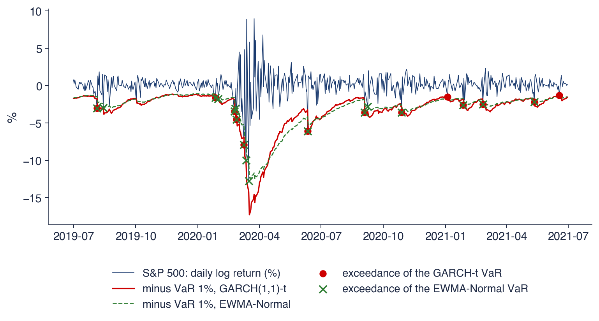
S&P 500, iulie 2019 – iunie 2021 (505 zile): VaR 1% pe o zi din GARCH(1,1)-t (reestimat la fiecare 250 de zile) și din EWMA cu \(z_t\) Normale
Depășiri (randament sub \(-\)VaR): GARCH-t 13, EWMA-Normal 17; așteptat circa 5; ambele modele reacționează, dar abia după primele scăderi mari din martie 2020
Tabelul numără depășirile VaR 1% în afara eșantionului, din 2015 pînă în 2026. Un VaR 1% corect este depășit în 1% dintre zile, iar depășirile nu apar grupat. Pentru S&P 500, cu 2 944 de zile, se așteaptă 29 de depășiri; GARCH-t are 49 (1,66% din zile), iar EWMA-Normal 65 (2,21%). Pentru DAX se așteaptă 30, iar modelele au 45 (1,51%) și 74 (2,49%); pentru BET se așteaptă 29, iar modelele au 34 (1,16%) și 67 (2,29%); pentru Bitcoin se așteaptă 43, iar modelele au 64 (1,50%) și 93 (2,17%).
EWMA-Normal este depășit în 2,2–2,5% dintre zile, de peste două ori mai des decît ar trebui, pe toate cele patru piețe. Cauza principală este cuantila: \(-2{,}326\) este prea puțin adîncă pentru inovații cu cozi groase. GARCH-t este depășit în 1,2–1,7% dintre zile, mult mai aproape de 1%, dar tot peste 1% pe toate piețele. Cea mai mare abatere este la S&P 500 (1,66%) și DAX (1,51%), unde modelul simetric ignoră efectul de levier; Bitcoin are însă o rată asemănătoare (1,50%) fără efect de levier, deci asimetria nu este singura explicație. Comparația din 2020 arată și o altă cauză: modelul reacționează la o criză abia după primele ei zile.
Sînt aceste diferențe semnificative? Răspunsul cere teste formale, care țin seama de numărul de zile și de gruparea depășirilor: testul lui Kupiec (1995) pentru frecvența depășirilor, ES 2,5% și backtesting-ul, subiectele Capitolului 10. Pentru prognoza VaR a Bitcoin, Pele & Mazurencu-Marinescu-Pele (2019) folosesc entropia calculată din date de frecvență înaltă.
Pe scurt
VaR 1%
zile
așteptat
GARCH-t
EWMA-Normal
S&P 500
2 944
29
49 (1,66%)
65 (2,21%)
DAX
2 973
30
45 (1,51%)
74 (2,49%)
BET
2 926
29
34 (1,16%)
67 (2,29%)
Bitcoin
4 279
43
64 (1,50%)
93 (2,17%)
Un VaR 1% corect este depășit în 1% dintre zile, iar depășirile nu apar grupat
EWMA-Normal: 2,2–2,5%: cuantila Normală este prea mică pentru cozi groase
GARCH-t: 1,2–1,7%: mult mai aproape de 1%, dar tot peste 1% pe toate cele patru piețe, mai ales pentru S&P 500, DAX (lipsește efectul de levier) și Bitcoin
VaR condiționat, (9.12), combină volatilitatea prognozată de GARCH cu cuantila inovațiilor. Pentru S&P 500 la 18 septembrie 2026, VaR 1% este 1,75% cu inovații t și 1,58% cu inovații Normale. În afara eșantionului, EWMA-Normal este depășit de peste două ori prea des, iar GARCH-t se apropie de rata de 1%, fără să o atingă. Secțiunea următoare pornește de la o întrebare deschisă ridicată de rezultatele capitolului.
AI pentru descoperire științifică
Secțiunea pornește de la o întrebare deschisă ridicată de contrastul dintre Bitcoin și S&P 500 și arată unde pot ajuta instrumentele AI (inteligență artificială, artificial intelligence) un cercetător care o studiază și ce verificări nu pot înlocui.
Devine volatilitatea Bitcoin mai asemănătoare cu volatilitatea unui indice de acțiuni? Pe întregul eșantion, contrastul este clar. Bitcoin este un IGARCH, fără revenire la medie, cu inovații extrem de groase (\(\hat\nu = 3{,}18\)) și fără efect de levier. S&P 500 are o volatilitate care revine la medie și un efect de levier puternic. Din 2024, fondurile tranzacționate la bursă (ETF, exchange-traded funds) pe Bitcoin aduc pe piața cripto investitori din piața de acțiuni, ceea ce ar putea apropia dinamica celor două piețe.
Lucrări anterioare au studiat întrebări înrudite. Pele et al. (2023) întreabă dacă activele cripto devin o clasă de active alternative, iar Pele, Lazar & Dufour (2017) tratează volatilitatea și entropia ca informație despre riscul de piață.
Întrebarea rămîne deschisă pentru că mai multe schimbări se suprapun în timp: schimbări de regim, prăbușirea pieței cripto din 2022 și lansarea ETF-urilor. Răspunsul depinde de fereastra aleasă, iar o schimbare a parametrilor GARCH poate reflecta oricare dintre aceste evenimente. Instrumentele AI pot accelera un astfel de studiu, dar rezultatele lui trebuie verificate (Wang et al., 2023).
Pe scurt
Devine volatilitatea Bitcoin mai asemănătoare cu volatilitatea unui indice de acțiuni?
azi: IGARCH, \(\hat\nu = 3{,}18\), fără efect de levier; S&P 500: revenire la medie, efect de levier puternic
din 2024, ETF-urile (exchange-traded funds, fonduri tranzacționate la bursă) pe Bitcoin aduc investitorii din piața de acțiuni pe piața cripto
Întrebarea rămîne deschisă: schimbările de regim, prăbușirea pieței cripto din 2022 și lansarea ETF-urilor se suprapun; răspunsul depinde de fereastra aleasă
Instrumentele AI pot accelera un astfel de studiu, dar rezultatele lui trebuie verificate Wang et al. (2023)
Un asistent AI poate ajuta în trei etape. Pentru literatură, poate întocmi o listă a studiilor despre modelele GARCH pentru active cripto și a modelelor folosite în ele. Pentru cod, poate scrie o primă versiune a estimărilor GJR-GARCH-t pe ferestre mobile pentru Bitcoin și S&P 500, cu pachetul arch. Pentru robustețe, poate propune și implementa variante: alte lungimi ale ferestrelor, Ethereum în locul Bitcoin, eliminarea zilelor de weekend pentru Bitcoin, inovații t asimetrice.
Exemplul de prompt de pe slide este precis: cere un GJR-GARCH(1,1) cu inovații Student-t, pe randamente logaritmice zilnice în procente, pe ferestre de 750 de zile mutate cu cîte 21 de zile, și grafice ale persistenței, ale lui \(\gamma\) și ale lui \(\nu\) în timp. Un prompt precis produce cod ale cărui alegeri pot fi comparate cu definițiile din acest capitol; unul vag produce cod ale cărui alegeri rămîn ascunse.
Rezultatul fiecărei etape este o ciornă. Lista de lucrări trebuie verificată lucrare cu lucrare, iar codul trebuie verificat pe rezultate cunoscute, de exemplu reproducînd estimările din tabelul GJR al acestui capitol pe întregul eșantion, înainte de a fi folosit pe ferestre mobile.
Pe scurt
Literatura: o listă a studiilor despre modelele GARCH pentru active cripto și a modelelor folosite
Cod: o primă versiune a estimărilor GJR-GARCH-t pe ferestre mobile pentru Bitcoin și S&P 500, cu pachetul arch
Robustețe: alte ferestre, Ethereum, eliminarea zilelor de weekend, inovații t asimetrice
Exemplu de prompt
Write Python code that estimates a GJR-GARCH(1,1) model with Student-t innovations on daily Bitcoin and S&P 500 log returns in percent, on rolling windows of 750 days moved by 21 days, and plots the persistence, gamma and nu over time.
Cîteva erori sînt frecvente în estimările GARCH generate cu AI. Prima privește unitățile: randamentele trebuie exprimate în procente, nu în zecimale, altfel algoritmul de optimizare se poate opri la un \(\omega\) greșit, foarte aproape de zero. A doua privește persistența: pentru GJR ea este \(\alpha + \beta + \gamma/2\), nu \(\alpha + \beta\), iar pentru EGARCH este \(\beta\); un cod care raportează \(\alpha + \beta\) pentru GJR subestimează memoria.
Estimările pe frontieră, cu \(\alpha + \beta = 1\), nu au timp de înjumătățire și nici volatilitate pe termen lung; ele se raportează ca IGARCH, nu ca valori infinite sau ca numere enorme produse de o împărțire la aproape zero. Calendarele diferă: Bitcoin se tranzacționează 7 zile pe săptămînă, S&P 500 cinci, deci fiecare serie se anualizează cu propria frecvență, iar persistențele zilnice nu sînt direct comparabile fără această corecție.
Ferestrele mobile se suprapun, astfel încît estimările consecutive au în comun cea mai mare parte a datelor și nu sînt dovezi independente. În sfîrșit, fiecare lucrare citată trebuie să existe: DOI-ul trebuie verificat, deoarece referințele inventate, cu titluri plauzibile, sînt o eroare cunoscută a modelelor de limbaj.
Pe scurt
Unitățile: randamente în % (nu în zecimale), altfel algoritmul de optimizare se poate opri la un \(\omega\) greșit
Persistența GJR este \(\alpha + \beta + \gamma/2\), nu \(\alpha + \beta\); pentru EGARCH este \(\beta\)
Estimările pe frontieră (\(\alpha + \beta = 1\)): fără timp de înjumătățire și fără volatilitate pe termen lung; nu raportăm valori infinite
Calendarele: Bitcoin se tranzacționează 7 zile pe săptămînă, S&P 500 cinci; anualizăm fiecare serie cu propria frecvență
Ferestrele mobile se suprapun: estimările consecutive nu sînt dovezi independente
Referințele: fiecare lucrare citată trebuie să existe; verificați DOI-ul
Proiectul întreabă dacă volatilitatea Bitcoin s-a apropiat de volatilitatea acțiunilor după 2021. Datele sînt prețurile zilnice ale Bitcoin din 2014, ale Ethereum din 2015 și ale indicilor S&P 500 și BET.
Pașii urmează capitolul. Întîi, estimați GJR-GARCH-t separat pe 2015–2019 și pe 2021–2026 și comparați persistența, \(\gamma\) și \(\nu\). Apoi, calculați corelația dintre volatilitățile GARCH ale Bitcoin și S&P 500 în fiecare perioadă. În final, comparați prognozele GARCH și EWMA în afara eșantionului cu QLIKE, în fiecare perioadă, pentru a vedea dacă avantajul GARCH, absent pentru Bitcoin pe întregul eșantion, apare în perioada recentă.
Rezultatul este un tabel, un grafic și un paragraf despre ce pot și ce nu pot arăta datele. Orice utilizare a instrumentelor AI se declară, împreună cu erorile lor pe care le-ați găsit și corectat.
Pe scurt
Întrebarea: s-a apropiat volatilitatea Bitcoin de volatilitatea acțiunilor după 2021?
date: Bitcoin din 2014, Ethereum din 2015, S&P 500 și BET (EODHD)
Pași
GJR-GARCH-t pe 2015–2019 și pe 2021–2026: persistența, \(\gamma\), \(\nu\)
corelația volatilităților GARCH ale Bitcoin și S&P 500 în fiecare perioadă
QLIKE în afara eșantionului pentru GARCH față de EWMA, în fiecare perioadă
Livrabil: un tabel, un grafic și un paragraf despre ce pot și ce nu pot arăta datele
Declarați orice utilizare a instrumentelor AI și enumerați erorile acestora pe care le-ați corectat
Sinteza secțiunii
Contrastul dintre Bitcoin, un IGARCH fără efect de levier, și S&P 500, cu revenire la medie și asimetrie puternică, ridică întrebarea dacă cele două piețe se apropie după lansarea ETF-urilor. Răspunsul cere estimări pe subperioade, reguli fixate dinainte și atenție la suprapunerea evenimentelor și a ferestrelor; instrumentele AI pot scrie o primă versiune a codului și a căutării bibliografice, iar cercetătorul verifică unitățile, persistențele și referințele.
Rezumat
Rezultatele capitolului se reduc la cîteva afirmații despre volatilitatea condiționată, un set de formule și trei întrebări de autoevaluare.
Randamentele zilnice au o medie aproape imprevizibilă și o varianță previzibilă, \(r_t = \mu + \sigma_t z_t\). GARCH(1,1), cu trei parametri în ecuația varianței, surprinde volatility clustering în toate seriile capitolului, cu persistența \(\alpha + \beta\) apropiată de 1. Modelele se estimează prin verosimilitate maximă, se raportează cu erori standard robuste, iar cozile se descriu cu inovații Student-t sau t asimetrice.
S&P 500 și DAX au nevoie de asimetrie: pentru acești indici, GJR-GARCH și EGARCH îmbunătățesc clar modelul, iar pentru BET efectul este slab. Bitcoin nu are efect de levier și este un IGARCH.
Prognozele GARCH revin la nivelul pe termen lung, iar GARCH este mai bun decît EWMA în afara eșantionului acolo unde volatilitatea revine la medie. VaR 1% \(= -(\mu + \sigma_{t+1}q_{0{,}01}(z))\) depinde atît de modelul volatilității, cît și de cuantila inovațiilor: EWMA cu cuantila Normală este depășit de peste două ori prea des, GARCH-t mult mai rar.
Tabelul adună formulele capitolului. ARCH(\(q\)) și GARCH(1,1), (9.3), dau varianța condiționată, iar varianța pe termen lung, (9.4), este constanta împărțită la unu minus persistența. Timpul de înjumătățire, (9.6), transformă persistența în zile.
GJR-GARCH, (9.8), și EGARCH, (9.9), adaugă efectul de levier. Log-verosimilitatea Normală, (9.7), este funcția maximizată la estimare și, pînă la constante, funcția de pierdere QLIKE, (9.11), folosită la evaluarea prognozelor. Prognoza pe mai mulți pași, (9.5), și VaR condiționat, (9.12), sînt cele două formule care transformă modelul într-un instrument de risc.
Toate formulele de prognoză depind de persistență prin puteri ale lui \(\alpha + \beta\), iar varianța pe termen lung depinde de ea prin numitorul \(1 - \alpha - \beta\). Cînd persistența este aproape de 1, erori mici în estimarea ei produc erori mari în prognozele pe orizonturi lungi.
Prima întrebare dă \(\omega = 0{,}05\),\(\alpha = 0{,}05\) și \(\beta = 0{,}90\) și cere varianța pe termen lung și timpul de înjumătățire. Varianța pe termen lung este \(0{,}05/(1 - 0{,}95) = 1\), iar timpul de înjumătățire este \(\ln 0{,}5/\ln 0{,}95 = 13{,}5\) zile.
A doua întrebare pornește de la un GJR cu \(\hat\alpha = 0\) și \(\hat\gamma = 0{,}2\) și cere efectul unei creșteri de 3%. Pentru un șoc pozitiv, \(I_{t-1} = 0\), iar termenul în \(\varepsilon_{t-1}^2\) dispare, deci varianța de mîine este \(\omega + \beta\sigma_t^2\): mărimea creșterii nu contează, iar varianța de mîine este aceeași ca după o zi fără nicio mișcare. Doar șocurile negative cresc varianța.
A treia întrebare spune că \(Q(10)\) al lui \(\hat z_t^2\) are p = 0,40 și întreabă dacă modelul este corect. Știm doar că nu a rămas niciun efect ARCH; pot rămîne asimetria sau o distribuție greșită a inovațiilor, pe care le verifică testul de asimetrie și graficul QQ. Capitolul următor, Capitolul 10, tratează VaR, ES și backtesting-ul.
Pe scurt
Întrebare: \(\omega = 0{,}05\), \(\alpha = 0{,}05\), \(\beta = 0{,}90\). Care sînt varianța pe termen lung și timpul de înjumătățire?
Răspuns: \(0{,}05/0{,}05 = 1\); \(\ln 0{,}5/\ln 0{,}95 = 13{,}5\) zile
Întrebare: GJR dă \(\hat\alpha = 0\), \(\hat\gamma = 0{,}2\). Ce se întîmplă după o creștere de 3%?
Răspuns: șocul nu adaugă nimic: \(\sigma_{t+1}^2 = \omega + \beta\sigma_t^2\), ca după o zi cu \(\varepsilon_t = 0\) (dacă \(\varepsilon_t = r_t - \mu > 0\)); doar șocurile negative cresc varianța
Întrebare: \(Q(10)\) al lui \(\hat z_t^2\) are p \(= 0{,}40\). Este modelul corect?
Răspuns: știm doar că nu a rămas niciun efect ARCH; pot rămîne asimetria sau o distribuție greșită